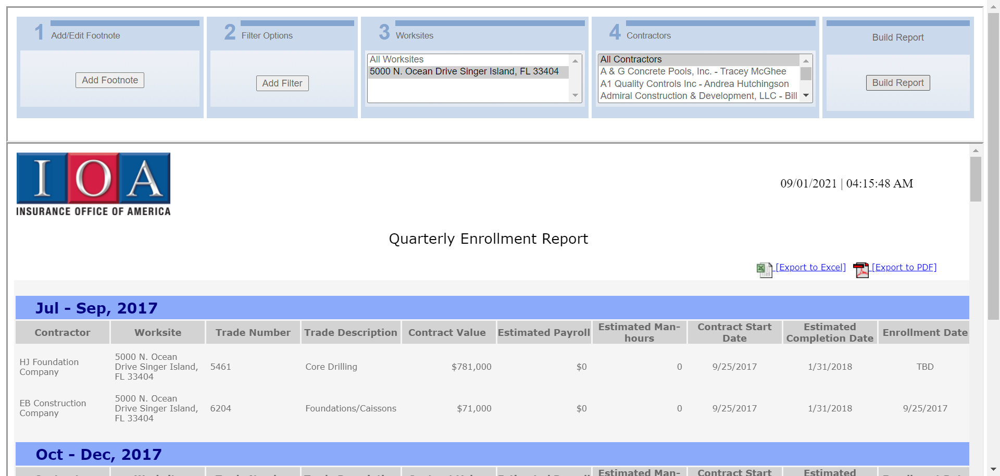
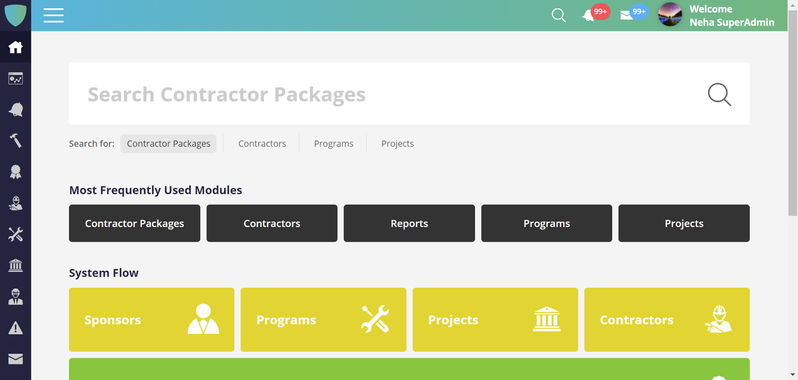

Total Tests
Total Steps
Total Time Taken (Current Run)
1h 21m 35s+698ms
Total Time Taken (Overall)
1h 21m 35s+698ms
Start
2021-09-01 13:14:27
End
2021-09-01 14:36:03
Pass Percentage
Environment
| Param | Value |
|---|---|
| OS | Windows 10 |
| User Name | NDave |
| Java Version | 15.0.2 |
| Host Name | Nourtek-100 |
Categories
| Name |
|---|
| Functional Test |
Tests
-
Report_EnrollmentListReportOld_Test :: testEnrollmentListReportOld fail2021-09-01 13:14:41 2021-09-01 13:16:16 0h 1m 35s+13mstestEnrollmentListReportOldFunctional Test
Status Timestamp Details 13:14:41 Test Started 13:14:41 Browser Name chrome 13:15:41 org.openqa.selenium.remote.UnreachableBrowserException: Error communicating with the remote browser. It may have died. Build info: version: '4.0.0-alpha-4', revision: 'c2d955b49e' System info: host: 'NOURTEK-100', ip: '192.168.29.211', os.name: 'Windows 10', os.arch: 'amd64', os.version: '10.0', java.version: '15.0.2' Driver info: driver.version: RemoteWebDriver Capabilities {acceptInsecureCerts: false, browserName: chrome, browserVersion: 93.0.4577.63, chrome: {chromedriverVersion: 92.0.4515.107 (87a818b10553..., userDataDir: C:\Users\NDave\AppData\Loca...}, goog:chromeOptions: {debuggerAddress: localhost:49884}, javascriptEnabled: true, networkConnectionEnabled: false, pageLoadStrategy: normal, platform: WINDOWS, platformName: WINDOWS, proxy: Proxy(), setWindowRect: true, strictFileInteractability: false, timeouts: {implicit: 0, pageLoad: 300000, script: 30000}, unhandledPromptBehavior: dismiss and notify, webauthn:extension:credBlob: true, webauthn:extension:largeBlob: true, webauthn:virtualAuthenticators: true} Session ID: 46265d82ce0380919d273503a670ebb0 Something Went Wrong 13:15:45 Something Went Wrong 
13:15:45 org.openqa.selenium.NoSuchFrameException: no such frame (Session info: chrome=93.0.4577.63) Build info: version: '4.0.0-alpha-4', revision: 'c2d955b49e' System info: host: 'NOURTEK-100', ip: '192.168.29.211', os.name: 'Windows 10', os.arch: 'amd64', os.version: '10.0', java.version: '15.0.2' Driver info: org.openqa.selenium.chrome.ChromeDriver Capabilities {acceptInsecureCerts: false, browserName: chrome, browserVersion: 93.0.4577.63, chrome: {chromedriverVersion: 92.0.4515.107 (87a818b10553..., userDataDir: C:\Users\NDave\AppData\Loca...}, goog:chromeOptions: {debuggerAddress: localhost:49884}, javascriptEnabled: true, networkConnectionEnabled: false, pageLoadStrategy: normal, platform: WINDOWS, platformName: WINDOWS, proxy: Proxy(), setWindowRect: true, strictFileInteractability: false, timeouts: {implicit: 0, pageLoad: 300000, script: 30000}, unhandledPromptBehavior: dismiss and notify, webauthn:extension:credBlob: true, webauthn:extension:largeBlob: true, webauthn:virtualAuthenticators: true} Session ID: 46265d82ce0380919d273503a670ebb0Report Header Name Not Matched 13:15:45 Something Went Wrong 
13:16:15 testEnrollmentListReportOld Test has been Failed2 13:16:15 org.openqa.selenium.NoSuchElementException: no such element: Unable to locate element: {"method":"xpath","selector":"//a[@id='HlinkExportPDF']"} (Session info: chrome=93.0.4577.63) For documentation on this error, please visit: https://selenium.dev/exceptions/#no_such_element Build info: version: '4.0.0-alpha-4', revision: 'c2d955b49e' System info: host: 'NOURTEK-100', ip: '192.168.29.211', os.name: 'Windows 10', os.arch: 'amd64', os.version: '10.0', java.version: '15.0.2' Driver info: org.openqa.selenium.chrome.ChromeDriver Capabilities {acceptInsecureCerts: false, browserName: chrome, browserVersion: 93.0.4577.63, chrome: {chromedriverVersion: 92.0.4515.107 (87a818b10553..., userDataDir: C:\Users\NDave\AppData\Loca...}, goog:chromeOptions: {debuggerAddress: localhost:49884}, javascriptEnabled: true, networkConnectionEnabled: false, pageLoadStrategy: normal, platform: WINDOWS, platformName: WINDOWS, proxy: Proxy(), setWindowRect: true, strictFileInteractability: false, timeouts: {implicit: 0, pageLoad: 300000, script: 30000}, unhandledPromptBehavior: dismiss and notify, webauthn:extension:credBlob: true, webauthn:extension:largeBlob: true, webauthn:virtualAuthenticators: true} Session ID: 46265d82ce0380919d273503a670ebb0 *** Element info: {Using=xpath, value=//a[@id='HlinkExportPDF']} at java.base/jdk.internal.reflect.NativeConstructorAccessorImpl.newInstance0(Native Method) at java.base/jdk.internal.reflect.NativeConstructorAccessorImpl.newInstance(NativeConstructorAccessorImpl.java:64) at java.base/jdk.internal.reflect.DelegatingConstructorAccessorImpl.newInstance(DelegatingConstructorAccessorImpl.java:45) at java.base/java.lang.reflect.Constructor.newInstanceWithCaller(Constructor.java:500) at java.base/java.lang.reflect.Constructor.newInstance(Constructor.java:481) at org.openqa.selenium.remote.codec.w3c.W3CHttpResponseCodec.createException(W3CHttpResponseCodec.java:196) at org.openqa.selenium.remote.codec.w3c.W3CHttpResponseCodec.decode(W3CHttpResponseCodec.java:129) at org.openqa.selenium.remote.codec.w3c.W3CHttpResponseCodec.decode(W3CHttpResponseCodec.java:53) at org.openqa.selenium.remote.HttpCommandExecutor.execute(HttpCommandExecutor.java:161) at org.openqa.selenium.remote.service.DriverCommandExecutor.execute(DriverCommandExecutor.java:83) at org.openqa.selenium.remote.RemoteWebDriver.execute(RemoteWebDriver.java:582) at org.openqa.selenium.remote.RemoteWebDriver.findElement(RemoteWebDriver.java:333) at org.openqa.selenium.remote.RemoteWebDriver.findElementByXPath(RemoteWebDriver.java:451) at org.openqa.selenium.By$ByXPath.findElement(By.java:394) at org.openqa.selenium.remote.RemoteWebDriver.findElement(RemoteWebDriver.java:325) at ObjectRepository.Report_EnrollmentListReportOld.linkExportToPDF(Report_EnrollmentListReportOld.java:90) at TestScript.Report_EnrollmentListReportOld_Test.testEnrollmentListReportOld(Report_EnrollmentListReportOld_Test.java:74) at java.base/jdk.internal.reflect.NativeMethodAccessorImpl.invoke0(Native Method) at java.base/jdk.internal.reflect.NativeMethodAccessorImpl.invoke(NativeMethodAccessorImpl.java:64) at java.base/jdk.internal.reflect.DelegatingMethodAccessorImpl.invoke(DelegatingMethodAccessorImpl.java:43) at java.base/java.lang.reflect.Method.invoke(Method.java:564) at org.testng.internal.MethodInvocationHelper.invokeMethod(MethodInvocationHelper.java:133) at org.testng.internal.TestInvoker.invokeMethod(TestInvoker.java:598) at org.testng.internal.TestInvoker.invokeTestMethod(TestInvoker.java:173) at org.testng.internal.MethodRunner.runInSequence(MethodRunner.java:46) at org.testng.internal.TestInvoker$MethodInvocationAgent.invoke(TestInvoker.java:824) at org.testng.internal.TestInvoker.invokeTestMethods(TestInvoker.java:146) at org.testng.internal.TestMethodWorker.invokeTestMethods(TestMethodWorker.java:146) at org.testng.internal.TestMethodWorker.run(TestMethodWorker.java:128) at java.base/java.util.ArrayList.forEach(ArrayList.java:1511) at org.testng.TestRunner.privateRun(TestRunner.java:794) at org.testng.TestRunner.run(TestRunner.java:596) at org.testng.SuiteRunner.runTest(SuiteRunner.java:377) at org.testng.SuiteRunner.runSequentially(SuiteRunner.java:371) at org.testng.SuiteRunner.privateRun(SuiteRunner.java:332) at org.testng.SuiteRunner.run(SuiteRunner.java:276) at org.testng.SuiteRunnerWorker.runSuite(SuiteRunnerWorker.java:53) at org.testng.SuiteRunnerWorker.run(SuiteRunnerWorker.java:96) at org.testng.TestNG.runSuitesSequentially(TestNG.java:1212) at org.testng.TestNG.runSuitesLocally(TestNG.java:1134) at org.testng.TestNG.runSuites(TestNG.java:1063) at org.testng.TestNG.run(TestNG.java:1031) at org.testng.remote.AbstractRemoteTestNG.run(AbstractRemoteTestNG.java:115) at org.testng.remote.RemoteTestNG.initAndRun(RemoteTestNG.java:251) at org.testng.remote.RemoteTestNG.main(RemoteTestNG.java:77)13:16:16 
13:16:16 Test Ended -
Reports_ProjectDeductionRateAnalysisOld_Test :: testProjectDeductionRateAnalysisOld fail2021-09-01 13:16:32 2021-09-01 13:19:18 0h 2m 46s+172mstestProjectDeductionRateAnalysisOldFunctional Test
Status Timestamp Details 13:16:32 Test Started 13:16:32 Browser Name chrome 13:17:22 https://beta.wrapportal.com/login.aspx?ReturnUrl=%2f Current Url 13:17:22 nourioa User Name Entered Successfully 13:17:22 X3OJa;uWw, Password Entered Successfully 13:17:23 Clicked On Login Button 13:17:23 Login Successfully 13:18:28 org.openqa.selenium.remote.UnreachableBrowserException: Error communicating with the remote browser. It may have died. Build info: version: '4.0.0-alpha-4', revision: 'c2d955b49e' System info: host: 'NOURTEK-100', ip: '192.168.29.211', os.name: 'Windows 10', os.arch: 'amd64', os.version: '10.0', java.version: '15.0.2' Driver info: driver.version: RemoteWebDriver Capabilities {acceptInsecureCerts: false, browserName: chrome, browserVersion: 93.0.4577.63, chrome: {chromedriverVersion: 92.0.4515.107 (87a818b10553..., userDataDir: C:\Users\NDave\AppData\Loca...}, goog:chromeOptions: {debuggerAddress: localhost:57236}, javascriptEnabled: true, networkConnectionEnabled: false, pageLoadStrategy: normal, platform: WINDOWS, platformName: WINDOWS, proxy: Proxy(), setWindowRect: true, strictFileInteractability: false, timeouts: {implicit: 0, pageLoad: 300000, script: 30000}, unhandledPromptBehavior: dismiss and notify, webauthn:extension:credBlob: true, webauthn:extension:largeBlob: true, webauthn:virtualAuthenticators: true} Session ID: 8c8913f24ec32833d28d0ccd31bbb594 Something Went Wrong 13:18:45 Something Went Wrong 13:18:45 org.openqa.selenium.NoSuchFrameException: no such frame (Session info: chrome=93.0.4577.63) Build info: version: '4.0.0-alpha-4', revision: 'c2d955b49e' System info: host: 'NOURTEK-100', ip: '192.168.29.211', os.name: 'Windows 10', os.arch: 'amd64', os.version: '10.0', java.version: '15.0.2' Driver info: org.openqa.selenium.chrome.ChromeDriver Capabilities {acceptInsecureCerts: false, browserName: chrome, browserVersion: 93.0.4577.63, chrome: {chromedriverVersion: 92.0.4515.107 (87a818b10553..., userDataDir: C:\Users\NDave\AppData\Loca...}, goog:chromeOptions: {debuggerAddress: localhost:57236}, javascriptEnabled: true, networkConnectionEnabled: false, pageLoadStrategy: normal, platform: WINDOWS, platformName: WINDOWS, proxy: Proxy(), setWindowRect: true, strictFileInteractability: false, timeouts: {implicit: 0, pageLoad: 300000, script: 30000}, unhandledPromptBehavior: dismiss and notify, webauthn:extension:credBlob: true, webauthn:extension:largeBlob: true, webauthn:virtualAuthenticators: true} Session ID: 8c8913f24ec32833d28d0ccd31bbb594Report Header Name Not Matched 13:18:47 Something Went Wrong 13:19:17 testProjectDeductionRateAnalysisOld Test has been Failed2 13:19:17 org.openqa.selenium.NoSuchElementException: no such element: Unable to locate element: {"method":"xpath","selector":"//a[@id='HlinkExportPDF']"} (Session info: chrome=93.0.4577.63) For documentation on this error, please visit: https://selenium.dev/exceptions/#no_such_element Build info: version: '4.0.0-alpha-4', revision: 'c2d955b49e' System info: host: 'NOURTEK-100', ip: '192.168.29.211', os.name: 'Windows 10', os.arch: 'amd64', os.version: '10.0', java.version: '15.0.2' Driver info: org.openqa.selenium.chrome.ChromeDriver Capabilities {acceptInsecureCerts: false, browserName: chrome, browserVersion: 93.0.4577.63, chrome: {chromedriverVersion: 92.0.4515.107 (87a818b10553..., userDataDir: C:\Users\NDave\AppData\Loca...}, goog:chromeOptions: {debuggerAddress: localhost:57236}, javascriptEnabled: true, networkConnectionEnabled: false, pageLoadStrategy: normal, platform: WINDOWS, platformName: WINDOWS, proxy: Proxy(), setWindowRect: true, strictFileInteractability: false, timeouts: {implicit: 0, pageLoad: 300000, script: 30000}, unhandledPromptBehavior: dismiss and notify, webauthn:extension:credBlob: true, webauthn:extension:largeBlob: true, webauthn:virtualAuthenticators: true} Session ID: 8c8913f24ec32833d28d0ccd31bbb594 *** Element info: {Using=xpath, value=//a[@id='HlinkExportPDF']} at java.base/jdk.internal.reflect.NativeConstructorAccessorImpl.newInstance0(Native Method) at java.base/jdk.internal.reflect.NativeConstructorAccessorImpl.newInstance(NativeConstructorAccessorImpl.java:64) at java.base/jdk.internal.reflect.DelegatingConstructorAccessorImpl.newInstance(DelegatingConstructorAccessorImpl.java:45) at java.base/java.lang.reflect.Constructor.newInstanceWithCaller(Constructor.java:500) at java.base/java.lang.reflect.Constructor.newInstance(Constructor.java:481) at org.openqa.selenium.remote.codec.w3c.W3CHttpResponseCodec.createException(W3CHttpResponseCodec.java:196) at org.openqa.selenium.remote.codec.w3c.W3CHttpResponseCodec.decode(W3CHttpResponseCodec.java:129) at org.openqa.selenium.remote.codec.w3c.W3CHttpResponseCodec.decode(W3CHttpResponseCodec.java:53) at org.openqa.selenium.remote.HttpCommandExecutor.execute(HttpCommandExecutor.java:161) at org.openqa.selenium.remote.service.DriverCommandExecutor.execute(DriverCommandExecutor.java:83) at org.openqa.selenium.remote.RemoteWebDriver.execute(RemoteWebDriver.java:582) at org.openqa.selenium.remote.RemoteWebDriver.findElement(RemoteWebDriver.java:333) at org.openqa.selenium.remote.RemoteWebDriver.findElementByXPath(RemoteWebDriver.java:451) at org.openqa.selenium.By$ByXPath.findElement(By.java:394) at org.openqa.selenium.remote.RemoteWebDriver.findElement(RemoteWebDriver.java:325) at ObjectRepository.Report_EnrollmentListReportOld.linkExportToPDF(Report_EnrollmentListReportOld.java:90) at TestScript.Reports_ProjectDeductionRateAnalysisOld_Test.testProjectDeductionRateAnalysisOld(Reports_ProjectDeductionRateAnalysisOld_Test.java:91) at java.base/jdk.internal.reflect.NativeMethodAccessorImpl.invoke0(Native Method) at java.base/jdk.internal.reflect.NativeMethodAccessorImpl.invoke(NativeMethodAccessorImpl.java:64) at java.base/jdk.internal.reflect.DelegatingMethodAccessorImpl.invoke(DelegatingMethodAccessorImpl.java:43) at java.base/java.lang.reflect.Method.invoke(Method.java:564) at org.testng.internal.MethodInvocationHelper.invokeMethod(MethodInvocationHelper.java:133) at org.testng.internal.TestInvoker.invokeMethod(TestInvoker.java:598) at org.testng.internal.TestInvoker.invokeTestMethod(TestInvoker.java:173) at org.testng.internal.MethodRunner.runInSequence(MethodRunner.java:46) at org.testng.internal.TestInvoker$MethodInvocationAgent.invoke(TestInvoker.java:824) at org.testng.internal.TestInvoker.invokeTestMethods(TestInvoker.java:146) at org.testng.internal.TestMethodWorker.invokeTestMethods(TestMethodWorker.java:146) at org.testng.internal.TestMethodWorker.run(TestMethodWorker.java:128) at java.base/java.util.ArrayList.forEach(ArrayList.java:1511) at org.testng.TestRunner.privateRun(TestRunner.java:794) at org.testng.TestRunner.run(TestRunner.java:596) at org.testng.SuiteRunner.runTest(SuiteRunner.java:377) at org.testng.SuiteRunner.runSequentially(SuiteRunner.java:371) at org.testng.SuiteRunner.privateRun(SuiteRunner.java:332) at org.testng.SuiteRunner.run(SuiteRunner.java:276) at org.testng.SuiteRunnerWorker.runSuite(SuiteRunnerWorker.java:53) at org.testng.SuiteRunnerWorker.run(SuiteRunnerWorker.java:96) at org.testng.TestNG.runSuitesSequentially(TestNG.java:1212) at org.testng.TestNG.runSuitesLocally(TestNG.java:1134) at org.testng.TestNG.runSuites(TestNG.java:1063) at org.testng.TestNG.run(TestNG.java:1031) at org.testng.remote.AbstractRemoteTestNG.run(AbstractRemoteTestNG.java:115) at org.testng.remote.RemoteTestNG.initAndRun(RemoteTestNG.java:251) at org.testng.remote.RemoteTestNG.main(RemoteTestNG.java:77)13:19:18 13:19:18 Test Ended -
Report_PayrollAuditSummaryOld_Test :: testPayrollAuditSummaryOld fail2021-09-01 13:19:42 2021-09-01 13:24:05 0h 4m 23s+203mstestPayrollAuditSummaryOldFunctional Test
Status Timestamp Details 13:19:42 Test Started 13:19:42 Browser Name chrome 13:20:46 https://beta.wrapportal.com/login.aspx?ReturnUrl=%2f Current Url 13:20:46 nourioa User Name Entered Successfully 13:20:46 X3OJa;uWw, Password Entered Successfully 13:20:48 Clicked On Login Button 13:20:48 Login Successfully 13:21:49 Clicked on Report Module Icon 13:21:51 Respective Program Select Form Dropdown 13:22:43 Payroll Audit Summar By Work Class Report is Selected 13:22:50 Project Selected Successfully 13:22:55 Contractor Selected Successfully 13:22:59 Clicked On Build Report Button 13:23:02 Report Generated 13:23:35 org.openqa.selenium.NoSuchElementException: no such element: Unable to locate element: {"method":"xpath","selector":"//body/table/tbody/tr[4]/td[1]"} (Session info: chrome=93.0.4577.63) For documentation on this error, please visit: https://selenium.dev/exceptions/#no_such_element Build info: version: '4.0.0-alpha-4', revision: 'c2d955b49e' System info: host: 'NOURTEK-100', ip: '192.168.29.211', os.name: 'Windows 10', os.arch: 'amd64', os.version: '10.0', java.version: '15.0.2' Driver info: org.openqa.selenium.chrome.ChromeDriver Capabilities {acceptInsecureCerts: false, browserName: chrome, browserVersion: 93.0.4577.63, chrome: {chromedriverVersion: 92.0.4515.107 (87a818b10553..., userDataDir: C:\Users\NDave\AppData\Loca...}, goog:chromeOptions: {debuggerAddress: localhost:52351}, javascriptEnabled: true, networkConnectionEnabled: false, pageLoadStrategy: normal, platform: WINDOWS, platformName: WINDOWS, proxy: Proxy(), setWindowRect: true, strictFileInteractability: false, timeouts: {implicit: 0, pageLoad: 300000, script: 30000}, unhandledPromptBehavior: dismiss and notify, webauthn:extension:credBlob: true, webauthn:extension:largeBlob: true, webauthn:virtualAuthenticators: true} Session ID: bdbe31adce077e1eab26fe3e9057bbe7 *** Element info: {Using=xpath, value=//body/table/tbody/tr[4]/td[1]}Report Header Name Not Matched 13:23:35 Something Went Wrong 
13:24:05 testPayrollAuditSummaryOld Test has been Failed2 13:24:05 org.openqa.selenium.NoSuchElementException: no such element: Unable to locate element: {"method":"xpath","selector":"//a[@id='HlinkExportPDF']"} (Session info: chrome=93.0.4577.63) For documentation on this error, please visit: https://selenium.dev/exceptions/#no_such_element Build info: version: '4.0.0-alpha-4', revision: 'c2d955b49e' System info: host: 'NOURTEK-100', ip: '192.168.29.211', os.name: 'Windows 10', os.arch: 'amd64', os.version: '10.0', java.version: '15.0.2' Driver info: org.openqa.selenium.chrome.ChromeDriver Capabilities {acceptInsecureCerts: false, browserName: chrome, browserVersion: 93.0.4577.63, chrome: {chromedriverVersion: 92.0.4515.107 (87a818b10553..., userDataDir: C:\Users\NDave\AppData\Loca...}, goog:chromeOptions: {debuggerAddress: localhost:52351}, javascriptEnabled: true, networkConnectionEnabled: false, pageLoadStrategy: normal, platform: WINDOWS, platformName: WINDOWS, proxy: Proxy(), setWindowRect: true, strictFileInteractability: false, timeouts: {implicit: 0, pageLoad: 300000, script: 30000}, unhandledPromptBehavior: dismiss and notify, webauthn:extension:credBlob: true, webauthn:extension:largeBlob: true, webauthn:virtualAuthenticators: true} Session ID: bdbe31adce077e1eab26fe3e9057bbe7 *** Element info: {Using=xpath, value=//a[@id='HlinkExportPDF']} at java.base/jdk.internal.reflect.NativeConstructorAccessorImpl.newInstance0(Native Method) at java.base/jdk.internal.reflect.NativeConstructorAccessorImpl.newInstance(NativeConstructorAccessorImpl.java:64) at java.base/jdk.internal.reflect.DelegatingConstructorAccessorImpl.newInstance(DelegatingConstructorAccessorImpl.java:45) at java.base/java.lang.reflect.Constructor.newInstanceWithCaller(Constructor.java:500) at java.base/java.lang.reflect.Constructor.newInstance(Constructor.java:481) at org.openqa.selenium.remote.codec.w3c.W3CHttpResponseCodec.createException(W3CHttpResponseCodec.java:196) at org.openqa.selenium.remote.codec.w3c.W3CHttpResponseCodec.decode(W3CHttpResponseCodec.java:129) at org.openqa.selenium.remote.codec.w3c.W3CHttpResponseCodec.decode(W3CHttpResponseCodec.java:53) at org.openqa.selenium.remote.HttpCommandExecutor.execute(HttpCommandExecutor.java:161) at org.openqa.selenium.remote.service.DriverCommandExecutor.execute(DriverCommandExecutor.java:83) at org.openqa.selenium.remote.RemoteWebDriver.execute(RemoteWebDriver.java:582) at org.openqa.selenium.remote.RemoteWebDriver.findElement(RemoteWebDriver.java:333) at org.openqa.selenium.remote.RemoteWebDriver.findElementByXPath(RemoteWebDriver.java:451) at org.openqa.selenium.By$ByXPath.findElement(By.java:394) at org.openqa.selenium.remote.RemoteWebDriver.findElement(RemoteWebDriver.java:325) at ObjectRepository.Report_PayrollAuditSummaryOld.linkExportToPDF(Report_PayrollAuditSummaryOld.java:90) at TestScript.Report_PayrollAuditSummaryOld_Test.testPayrollAuditSummaryOld(Report_PayrollAuditSummaryOld_Test.java:84) at java.base/jdk.internal.reflect.NativeMethodAccessorImpl.invoke0(Native Method) at java.base/jdk.internal.reflect.NativeMethodAccessorImpl.invoke(NativeMethodAccessorImpl.java:64) at java.base/jdk.internal.reflect.DelegatingMethodAccessorImpl.invoke(DelegatingMethodAccessorImpl.java:43) at java.base/java.lang.reflect.Method.invoke(Method.java:564) at org.testng.internal.MethodInvocationHelper.invokeMethod(MethodInvocationHelper.java:133) at org.testng.internal.TestInvoker.invokeMethod(TestInvoker.java:598) at org.testng.internal.TestInvoker.invokeTestMethod(TestInvoker.java:173) at org.testng.internal.MethodRunner.runInSequence(MethodRunner.java:46) at org.testng.internal.TestInvoker$MethodInvocationAgent.invoke(TestInvoker.java:824) at org.testng.internal.TestInvoker.invokeTestMethods(TestInvoker.java:146) at org.testng.internal.TestMethodWorker.invokeTestMethods(TestMethodWorker.java:146) at org.testng.internal.TestMethodWorker.run(TestMethodWorker.java:128) at java.base/java.util.ArrayList.forEach(ArrayList.java:1511) at org.testng.TestRunner.privateRun(TestRunner.java:794) at org.testng.TestRunner.run(TestRunner.java:596) at org.testng.SuiteRunner.runTest(SuiteRunner.java:377) at org.testng.SuiteRunner.runSequentially(SuiteRunner.java:371) at org.testng.SuiteRunner.privateRun(SuiteRunner.java:332) at org.testng.SuiteRunner.run(SuiteRunner.java:276) at org.testng.SuiteRunnerWorker.runSuite(SuiteRunnerWorker.java:53) at org.testng.SuiteRunnerWorker.run(SuiteRunnerWorker.java:96) at org.testng.TestNG.runSuitesSequentially(TestNG.java:1212) at org.testng.TestNG.runSuitesLocally(TestNG.java:1134) at org.testng.TestNG.runSuites(TestNG.java:1063) at org.testng.TestNG.run(TestNG.java:1031) at org.testng.remote.AbstractRemoteTestNG.run(AbstractRemoteTestNG.java:115) at org.testng.remote.RemoteTestNG.initAndRun(RemoteTestNG.java:251) at org.testng.remote.RemoteTestNG.main(RemoteTestNG.java:77)13:24:05 
13:24:05 Test Ended -
Report_ContractorDeductTrackingOld_Test :: testContractorDeductTrackingOld fail2021-09-01 13:24:44 2021-09-01 13:28:01 0h 3m 16s+859mstestContractorDeductTrackingOldFunctional Test
Status Timestamp Details 13:24:44 Test Started 13:24:44 Browser Name chrome 13:25:21 https://beta.wrapportal.com/login.aspx?ReturnUrl=%2f Current Url 13:25:21 nourioa User Name Entered Successfully 13:25:21 X3OJa;uWw, Password Entered Successfully 13:25:23 Clicked On Login Button 13:25:23 Login Successfully 13:26:03 Clicked on Report Module Icon 13:26:49 Respective Program Select Form Dropdown 13:26:54 Contractor Deduct Tracking Report is Selected 13:27:01 Project Selected Successfully 13:27:04 Contractor Selected Successfully 13:27:08 Clicked On Build Report Button 13:27:11 Report Generated 13:27:16 Report Header Name Matched 13:27:16 Report Generated Successfully 13:27:32 Pdf Generated 
13:27:50 Excel file is not Downloaded Successfully 13:28:01 testContractorDeductTrackingOld Test has been Passed1 13:28:01 Test Ended -
Report_EnrollmentDetailReportOld_Test :: testEnrollmentDetailReportOld fail2021-09-01 13:28:34 2021-09-01 13:31:23 0h 2m 49s+479mstestEnrollmentDetailReportOldFunctional Test
Status Timestamp Details 13:28:34 Test Started 13:28:34 Browser Name chrome 13:29:10 https://beta.wrapportal.com/login.aspx?ReturnUrl=%2f Current Url 13:29:10 nourioa User Name Entered Successfully 13:29:10 X3OJa;uWw, Password Entered Successfully 13:29:11 Clicked On Login Button 13:29:11 Login Successfully 13:30:01 Clicked on Report Module Icon 13:30:03 Respective Program Select Form Dropdown 13:30:34 Enrollment Detail Report Report is Selected 13:30:44 Project Selected Successfully 13:30:47 Contractor Selected Successfully 13:30:51 Clicked On Build Report Button 13:30:54 Report Generated 13:30:56 Report Header Name Matched 13:30:56 Report Header Name Matched 13:30:56 Report Generated Successfully 13:31:03 Pdf Generated 
13:31:18 Excel file is not Downloaded Successfully 13:31:23 testEnrollmentDetailReportOld Test has been Passed1 13:31:23 Test Ended -
Report_ExpiringCertificateReportOld_Test :: testExpiringCertificateReportOld fail2021-09-01 13:31:38 2021-09-01 13:34:15 0h 2m 36s+810mstestExpiringCertificateReportOldFunctional Test
Status Timestamp Details 13:31:38 Test Started 13:31:38 Browser Name chrome 13:32:20 https://beta.wrapportal.com/login.aspx?ReturnUrl=%2f Current Url 13:32:20 nourioa User Name Entered Successfully 13:32:20 X3OJa;uWw, Password Entered Successfully 13:32:22 Clicked On Login Button 13:32:22 Login Successfully 13:33:27 org.openqa.selenium.remote.UnreachableBrowserException: Error communicating with the remote browser. It may have died. Build info: version: '4.0.0-alpha-4', revision: 'c2d955b49e' System info: host: 'NOURTEK-100', ip: '192.168.29.211', os.name: 'Windows 10', os.arch: 'amd64', os.version: '10.0', java.version: '15.0.2' Driver info: driver.version: RemoteWebDriver Capabilities {acceptInsecureCerts: false, browserName: chrome, browserVersion: 93.0.4577.63, chrome: {chromedriverVersion: 92.0.4515.107 (87a818b10553..., userDataDir: C:\Users\NDave\AppData\Loca...}, goog:chromeOptions: {debuggerAddress: localhost:53692}, javascriptEnabled: true, networkConnectionEnabled: false, pageLoadStrategy: normal, platform: WINDOWS, platformName: WINDOWS, proxy: Proxy(), setWindowRect: true, strictFileInteractability: false, timeouts: {implicit: 0, pageLoad: 300000, script: 30000}, unhandledPromptBehavior: dismiss and notify, webauthn:extension:credBlob: true, webauthn:extension:largeBlob: true, webauthn:virtualAuthenticators: true} Session ID: e990b4565bcf19335178b4ffbee46ab1 Something Went Wrong 13:33:42 Something Went Wrong 13:33:42 org.openqa.selenium.NoSuchFrameException: no such frame (Session info: chrome=93.0.4577.63) Build info: version: '4.0.0-alpha-4', revision: 'c2d955b49e' System info: host: 'NOURTEK-100', ip: '192.168.29.211', os.name: 'Windows 10', os.arch: 'amd64', os.version: '10.0', java.version: '15.0.2' Driver info: org.openqa.selenium.chrome.ChromeDriver Capabilities {acceptInsecureCerts: false, browserName: chrome, browserVersion: 93.0.4577.63, chrome: {chromedriverVersion: 92.0.4515.107 (87a818b10553..., userDataDir: C:\Users\NDave\AppData\Loca...}, goog:chromeOptions: {debuggerAddress: localhost:53692}, javascriptEnabled: true, networkConnectionEnabled: false, pageLoadStrategy: normal, platform: WINDOWS, platformName: WINDOWS, proxy: Proxy(), setWindowRect: true, strictFileInteractability: false, timeouts: {implicit: 0, pageLoad: 300000, script: 30000}, unhandledPromptBehavior: dismiss and notify, webauthn:extension:credBlob: true, webauthn:extension:largeBlob: true, webauthn:virtualAuthenticators: true} Session ID: e990b4565bcf19335178b4ffbee46ab1Report Header Name Not Matched 13:33:43 Something Went Wrong 13:34:13 testExpiringCertificateReportOld Test has been Failed2 13:34:13 org.openqa.selenium.NoSuchFrameException: no such frame (Session info: chrome=93.0.4577.63) Build info: version: '4.0.0-alpha-4', revision: 'c2d955b49e' System info: host: 'NOURTEK-100', ip: '192.168.29.211', os.name: 'Windows 10', os.arch: 'amd64', os.version: '10.0', java.version: '15.0.2' Driver info: org.openqa.selenium.chrome.ChromeDriver Capabilities {acceptInsecureCerts: false, browserName: chrome, browserVersion: 93.0.4577.63, chrome: {chromedriverVersion: 92.0.4515.107 (87a818b10553..., userDataDir: C:\Users\NDave\AppData\Loca...}, goog:chromeOptions: {debuggerAddress: localhost:53692}, javascriptEnabled: true, networkConnectionEnabled: false, pageLoadStrategy: normal, platform: WINDOWS, platformName: WINDOWS, proxy: Proxy(), setWindowRect: true, strictFileInteractability: false, timeouts: {implicit: 0, pageLoad: 300000, script: 30000}, unhandledPromptBehavior: dismiss and notify, webauthn:extension:credBlob: true, webauthn:extension:largeBlob: true, webauthn:virtualAuthenticators: true} Session ID: e990b4565bcf19335178b4ffbee46ab1 at java.base/jdk.internal.reflect.NativeConstructorAccessorImpl.newInstance0(Native Method) at java.base/jdk.internal.reflect.NativeConstructorAccessorImpl.newInstance(NativeConstructorAccessorImpl.java:64) at java.base/jdk.internal.reflect.DelegatingConstructorAccessorImpl.newInstance(DelegatingConstructorAccessorImpl.java:45) at java.base/java.lang.reflect.Constructor.newInstanceWithCaller(Constructor.java:500) at java.base/java.lang.reflect.Constructor.newInstance(Constructor.java:481) at org.openqa.selenium.remote.codec.w3c.W3CHttpResponseCodec.createException(W3CHttpResponseCodec.java:196) at org.openqa.selenium.remote.codec.w3c.W3CHttpResponseCodec.decode(W3CHttpResponseCodec.java:129) at org.openqa.selenium.remote.codec.w3c.W3CHttpResponseCodec.decode(W3CHttpResponseCodec.java:53) at org.openqa.selenium.remote.HttpCommandExecutor.execute(HttpCommandExecutor.java:161) at org.openqa.selenium.remote.service.DriverCommandExecutor.execute(DriverCommandExecutor.java:83) at org.openqa.selenium.remote.RemoteWebDriver.execute(RemoteWebDriver.java:582) at org.openqa.selenium.remote.RemoteWebDriver$RemoteTargetLocator.frame(RemoteWebDriver.java:945) at TestScript.Report_ExpiringCertificateReportOld_Test.testExpiringCertificateReportOld(Report_ExpiringCertificateReportOld_Test.java:94) at java.base/jdk.internal.reflect.NativeMethodAccessorImpl.invoke0(Native Method) at java.base/jdk.internal.reflect.NativeMethodAccessorImpl.invoke(NativeMethodAccessorImpl.java:64) at java.base/jdk.internal.reflect.DelegatingMethodAccessorImpl.invoke(DelegatingMethodAccessorImpl.java:43) at java.base/java.lang.reflect.Method.invoke(Method.java:564) at org.testng.internal.MethodInvocationHelper.invokeMethod(MethodInvocationHelper.java:133) at org.testng.internal.TestInvoker.invokeMethod(TestInvoker.java:598) at org.testng.internal.TestInvoker.invokeTestMethod(TestInvoker.java:173) at org.testng.internal.MethodRunner.runInSequence(MethodRunner.java:46) at org.testng.internal.TestInvoker$MethodInvocationAgent.invoke(TestInvoker.java:824) at org.testng.internal.TestInvoker.invokeTestMethods(TestInvoker.java:146) at org.testng.internal.TestMethodWorker.invokeTestMethods(TestMethodWorker.java:146) at org.testng.internal.TestMethodWorker.run(TestMethodWorker.java:128) at java.base/java.util.ArrayList.forEach(ArrayList.java:1511) at org.testng.TestRunner.privateRun(TestRunner.java:794) at org.testng.TestRunner.run(TestRunner.java:596) at org.testng.SuiteRunner.runTest(SuiteRunner.java:377) at org.testng.SuiteRunner.runSequentially(SuiteRunner.java:371) at org.testng.SuiteRunner.privateRun(SuiteRunner.java:332) at org.testng.SuiteRunner.run(SuiteRunner.java:276) at org.testng.SuiteRunnerWorker.runSuite(SuiteRunnerWorker.java:53) at org.testng.SuiteRunnerWorker.run(SuiteRunnerWorker.java:96) at org.testng.TestNG.runSuitesSequentially(TestNG.java:1212) at org.testng.TestNG.runSuitesLocally(TestNG.java:1134) at org.testng.TestNG.runSuites(TestNG.java:1063) at org.testng.TestNG.run(TestNG.java:1031) at org.testng.remote.AbstractRemoteTestNG.run(AbstractRemoteTestNG.java:115) at org.testng.remote.RemoteTestNG.initAndRun(RemoteTestNG.java:251) at org.testng.remote.RemoteTestNG.main(RemoteTestNG.java:77)13:34:15 13:34:15 Test Ended -
Report_ReportedPayrollByContractorWorkClassOldTest :: testReportedPayrollByContractorOld fail2021-09-01 13:34:32 2021-09-01 13:39:49 0h 5m 17s+199mstestReportedPayrollByContractorOldFunctional Test
Status Timestamp Details 13:34:32 Test Started 13:34:32 Browser Name chrome 13:35:34 https://beta.wrapportal.com/login.aspx?ReturnUrl=%2f Current Url 13:35:35 nourioa User Name Entered Successfully 13:35:35 X3OJa;uWw, Password Entered Successfully 13:35:36 Clicked On Login Button 13:35:36 Login Successfully 13:36:31 Clicked on Report Module Icon 13:36:33 Respective Program Select Form Dropdown 13:37:25 Reported Payroll By Contractor Work Class Report is Selected 13:38:06 Project Selected Successfully 13:38:09 Contractor Selected Successfully 13:38:13 Clicked On Build Report Button 13:38:19 Report Generated 
13:38:49 org.openqa.selenium.NoSuchElementException: no such element: Unable to locate element: {"method":"xpath","selector":"//*[contains(text(),'Reported Payroll By Contractor Work Class ')]"} (Session info: chrome=93.0.4577.63) For documentation on this error, please visit: https://selenium.dev/exceptions/#no_such_element Build info: version: '4.0.0-alpha-4', revision: 'c2d955b49e' System info: host: 'NOURTEK-100', ip: '192.168.29.211', os.name: 'Windows 10', os.arch: 'amd64', os.version: '10.0', java.version: '15.0.2' Driver info: org.openqa.selenium.chrome.ChromeDriver Capabilities {acceptInsecureCerts: false, browserName: chrome, browserVersion: 93.0.4577.63, chrome: {chromedriverVersion: 92.0.4515.107 (87a818b10553..., userDataDir: C:\Users\NDave\AppData\Loca...}, goog:chromeOptions: {debuggerAddress: localhost:63436}, javascriptEnabled: true, networkConnectionEnabled: false, pageLoadStrategy: normal, platform: WINDOWS, platformName: WINDOWS, proxy: Proxy(), setWindowRect: true, strictFileInteractability: false, timeouts: {implicit: 0, pageLoad: 300000, script: 30000}, unhandledPromptBehavior: dismiss and notify, webauthn:extension:credBlob: true, webauthn:extension:largeBlob: true, webauthn:virtualAuthenticators: true} Session ID: 60519b7839f45cf5ac4dc62534ccec97 *** Element info: {Using=xpath, value=//*[contains(text(),'Reported Payroll By Contractor Work Class ')]}Report Header Name Not Matched 13:38:49 Something Went Wrong 13:39:49 testReportedPayrollByContractorOld Test has been Failed2 13:39:49 org.openqa.selenium.NoSuchElementException: no such element: Unable to locate element: {"method":"xpath","selector":"//a[@id='HlinkExportExcel']"} (Session info: chrome=93.0.4577.63) For documentation on this error, please visit: https://selenium.dev/exceptions/#no_such_element Build info: version: '4.0.0-alpha-4', revision: 'c2d955b49e' System info: host: 'NOURTEK-100', ip: '192.168.29.211', os.name: 'Windows 10', os.arch: 'amd64', os.version: '10.0', java.version: '15.0.2' Driver info: org.openqa.selenium.chrome.ChromeDriver Capabilities {acceptInsecureCerts: false, browserName: chrome, browserVersion: 93.0.4577.63, chrome: {chromedriverVersion: 92.0.4515.107 (87a818b10553..., userDataDir: C:\Users\NDave\AppData\Loca...}, goog:chromeOptions: {debuggerAddress: localhost:63436}, javascriptEnabled: true, networkConnectionEnabled: false, pageLoadStrategy: normal, platform: WINDOWS, platformName: WINDOWS, proxy: Proxy(), setWindowRect: true, strictFileInteractability: false, timeouts: {implicit: 0, pageLoad: 300000, script: 30000}, unhandledPromptBehavior: dismiss and notify, webauthn:extension:credBlob: true, webauthn:extension:largeBlob: true, webauthn:virtualAuthenticators: true} Session ID: 60519b7839f45cf5ac4dc62534ccec97 *** Element info: {Using=xpath, value=//a[@id='HlinkExportExcel']} at java.base/jdk.internal.reflect.NativeConstructorAccessorImpl.newInstance0(Native Method) at java.base/jdk.internal.reflect.NativeConstructorAccessorImpl.newInstance(NativeConstructorAccessorImpl.java:64) at java.base/jdk.internal.reflect.DelegatingConstructorAccessorImpl.newInstance(DelegatingConstructorAccessorImpl.java:45) at java.base/java.lang.reflect.Constructor.newInstanceWithCaller(Constructor.java:500) at java.base/java.lang.reflect.Constructor.newInstance(Constructor.java:481) at org.openqa.selenium.remote.codec.w3c.W3CHttpResponseCodec.createException(W3CHttpResponseCodec.java:196) at org.openqa.selenium.remote.codec.w3c.W3CHttpResponseCodec.decode(W3CHttpResponseCodec.java:129) at org.openqa.selenium.remote.codec.w3c.W3CHttpResponseCodec.decode(W3CHttpResponseCodec.java:53) at org.openqa.selenium.remote.HttpCommandExecutor.execute(HttpCommandExecutor.java:161) at org.openqa.selenium.remote.service.DriverCommandExecutor.execute(DriverCommandExecutor.java:83) at org.openqa.selenium.remote.RemoteWebDriver.execute(RemoteWebDriver.java:582) at org.openqa.selenium.remote.RemoteWebDriver.findElement(RemoteWebDriver.java:333) at org.openqa.selenium.remote.RemoteWebDriver.findElementByXPath(RemoteWebDriver.java:451) at org.openqa.selenium.By$ByXPath.findElement(By.java:394) at org.openqa.selenium.remote.RemoteWebDriver.findElement(RemoteWebDriver.java:325) at ObjectRepository.Report_EnrollmentListReportOld.linkExportToExcel(Report_EnrollmentListReportOld.java:80) at TestScript.Report_ReportedPayrollByContractorWorkClassOldTest.testReportedPayrollByContractorOld(Report_ReportedPayrollByContractorWorkClassOldTest.java:100) at java.base/jdk.internal.reflect.NativeMethodAccessorImpl.invoke0(Native Method) at java.base/jdk.internal.reflect.NativeMethodAccessorImpl.invoke(NativeMethodAccessorImpl.java:64) at java.base/jdk.internal.reflect.DelegatingMethodAccessorImpl.invoke(DelegatingMethodAccessorImpl.java:43) at java.base/java.lang.reflect.Method.invoke(Method.java:564) at org.testng.internal.MethodInvocationHelper.invokeMethod(MethodInvocationHelper.java:133) at org.testng.internal.TestInvoker.invokeMethod(TestInvoker.java:598) at org.testng.internal.TestInvoker.invokeTestMethod(TestInvoker.java:173) at org.testng.internal.MethodRunner.runInSequence(MethodRunner.java:46) at org.testng.internal.TestInvoker$MethodInvocationAgent.invoke(TestInvoker.java:824) at org.testng.internal.TestInvoker.invokeTestMethods(TestInvoker.java:146) at org.testng.internal.TestMethodWorker.invokeTestMethods(TestMethodWorker.java:146) at org.testng.internal.TestMethodWorker.run(TestMethodWorker.java:128) at java.base/java.util.ArrayList.forEach(ArrayList.java:1511) at org.testng.TestRunner.privateRun(TestRunner.java:794) at org.testng.TestRunner.run(TestRunner.java:596) at org.testng.SuiteRunner.runTest(SuiteRunner.java:377) at org.testng.SuiteRunner.runSequentially(SuiteRunner.java:371) at org.testng.SuiteRunner.privateRun(SuiteRunner.java:332) at org.testng.SuiteRunner.run(SuiteRunner.java:276) at org.testng.SuiteRunnerWorker.runSuite(SuiteRunnerWorker.java:53) at org.testng.SuiteRunnerWorker.run(SuiteRunnerWorker.java:96) at org.testng.TestNG.runSuitesSequentially(TestNG.java:1212) at org.testng.TestNG.runSuitesLocally(TestNG.java:1134) at org.testng.TestNG.runSuites(TestNG.java:1063) at org.testng.TestNG.run(TestNG.java:1031) at org.testng.remote.AbstractRemoteTestNG.run(AbstractRemoteTestNG.java:115) at org.testng.remote.RemoteTestNG.initAndRun(RemoteTestNG.java:251) at org.testng.remote.RemoteTestNG.main(RemoteTestNG.java:77)13:39:49 
13:39:49 Test Ended -
Report_ProjectEnrollmentSummaryReportOld_Test :: testProjectSummaryReportOld fail2021-09-01 13:40:33 2021-09-01 13:43:06 0h 2m 32s+536mstestProjectSummaryReportOldFunctional Test
Status Timestamp Details 13:40:33 Test Started 13:40:33 Browser Name chrome 13:41:14 https://beta.wrapportal.com/login.aspx?ReturnUrl=%2f Current Url 13:41:14 nourioa User Name Entered Successfully 13:41:14 X3OJa;uWw, Password Entered Successfully 13:41:16 Clicked On Login Button 13:41:16 Login Successfully 13:42:19 org.openqa.selenium.remote.UnreachableBrowserException: Error communicating with the remote browser. It may have died. Build info: version: '4.0.0-alpha-4', revision: 'c2d955b49e' System info: host: 'NOURTEK-100', ip: '192.168.29.211', os.name: 'Windows 10', os.arch: 'amd64', os.version: '10.0', java.version: '15.0.2' Driver info: driver.version: RemoteWebDriver Capabilities {acceptInsecureCerts: false, browserName: chrome, browserVersion: 93.0.4577.63, chrome: {chromedriverVersion: 92.0.4515.107 (87a818b10553..., userDataDir: C:\Users\NDave\AppData\Loca...}, goog:chromeOptions: {debuggerAddress: localhost:56744}, javascriptEnabled: true, networkConnectionEnabled: false, pageLoadStrategy: normal, platform: WINDOWS, platformName: WINDOWS, proxy: Proxy(), setWindowRect: true, strictFileInteractability: false, timeouts: {implicit: 0, pageLoad: 300000, script: 30000}, unhandledPromptBehavior: dismiss and notify, webauthn:extension:credBlob: true, webauthn:extension:largeBlob: true, webauthn:virtualAuthenticators: true} Session ID: 344a9031c70a0cc43279c6dfada87913 Something Went Wrong 13:42:33 Something Went Wrong 13:42:33 org.openqa.selenium.NoSuchFrameException: no such frame (Session info: chrome=93.0.4577.63) Build info: version: '4.0.0-alpha-4', revision: 'c2d955b49e' System info: host: 'NOURTEK-100', ip: '192.168.29.211', os.name: 'Windows 10', os.arch: 'amd64', os.version: '10.0', java.version: '15.0.2' Driver info: org.openqa.selenium.chrome.ChromeDriver Capabilities {acceptInsecureCerts: false, browserName: chrome, browserVersion: 93.0.4577.63, chrome: {chromedriverVersion: 92.0.4515.107 (87a818b10553..., userDataDir: C:\Users\NDave\AppData\Loca...}, goog:chromeOptions: {debuggerAddress: localhost:56744}, javascriptEnabled: true, networkConnectionEnabled: false, pageLoadStrategy: normal, platform: WINDOWS, platformName: WINDOWS, proxy: Proxy(), setWindowRect: true, strictFileInteractability: false, timeouts: {implicit: 0, pageLoad: 300000, script: 30000}, unhandledPromptBehavior: dismiss and notify, webauthn:extension:credBlob: true, webauthn:extension:largeBlob: true, webauthn:virtualAuthenticators: true} Session ID: 344a9031c70a0cc43279c6dfada87913Report Header Name Not Matched 13:42:34 Something Went Wrong 13:43:04 testProjectSummaryReportOld Test has been Failed2 13:43:04 org.openqa.selenium.NoSuchFrameException: no such frame (Session info: chrome=93.0.4577.63) Build info: version: '4.0.0-alpha-4', revision: 'c2d955b49e' System info: host: 'NOURTEK-100', ip: '192.168.29.211', os.name: 'Windows 10', os.arch: 'amd64', os.version: '10.0', java.version: '15.0.2' Driver info: org.openqa.selenium.chrome.ChromeDriver Capabilities {acceptInsecureCerts: false, browserName: chrome, browserVersion: 93.0.4577.63, chrome: {chromedriverVersion: 92.0.4515.107 (87a818b10553..., userDataDir: C:\Users\NDave\AppData\Loca...}, goog:chromeOptions: {debuggerAddress: localhost:56744}, javascriptEnabled: true, networkConnectionEnabled: false, pageLoadStrategy: normal, platform: WINDOWS, platformName: WINDOWS, proxy: Proxy(), setWindowRect: true, strictFileInteractability: false, timeouts: {implicit: 0, pageLoad: 300000, script: 30000}, unhandledPromptBehavior: dismiss and notify, webauthn:extension:credBlob: true, webauthn:extension:largeBlob: true, webauthn:virtualAuthenticators: true} Session ID: 344a9031c70a0cc43279c6dfada87913 at java.base/jdk.internal.reflect.NativeConstructorAccessorImpl.newInstance0(Native Method) at java.base/jdk.internal.reflect.NativeConstructorAccessorImpl.newInstance(NativeConstructorAccessorImpl.java:64) at java.base/jdk.internal.reflect.DelegatingConstructorAccessorImpl.newInstance(DelegatingConstructorAccessorImpl.java:45) at java.base/java.lang.reflect.Constructor.newInstanceWithCaller(Constructor.java:500) at java.base/java.lang.reflect.Constructor.newInstance(Constructor.java:481) at org.openqa.selenium.remote.codec.w3c.W3CHttpResponseCodec.createException(W3CHttpResponseCodec.java:196) at org.openqa.selenium.remote.codec.w3c.W3CHttpResponseCodec.decode(W3CHttpResponseCodec.java:129) at org.openqa.selenium.remote.codec.w3c.W3CHttpResponseCodec.decode(W3CHttpResponseCodec.java:53) at org.openqa.selenium.remote.HttpCommandExecutor.execute(HttpCommandExecutor.java:161) at org.openqa.selenium.remote.service.DriverCommandExecutor.execute(DriverCommandExecutor.java:83) at org.openqa.selenium.remote.RemoteWebDriver.execute(RemoteWebDriver.java:582) at org.openqa.selenium.remote.RemoteWebDriver$RemoteTargetLocator.frame(RemoteWebDriver.java:945) at TestScript.Report_ProjectEnrollmentSummaryReportOld_Test.testProjectSummaryReportOld(Report_ProjectEnrollmentSummaryReportOld_Test.java:91) at java.base/jdk.internal.reflect.NativeMethodAccessorImpl.invoke0(Native Method) at java.base/jdk.internal.reflect.NativeMethodAccessorImpl.invoke(NativeMethodAccessorImpl.java:64) at java.base/jdk.internal.reflect.DelegatingMethodAccessorImpl.invoke(DelegatingMethodAccessorImpl.java:43) at java.base/java.lang.reflect.Method.invoke(Method.java:564) at org.testng.internal.MethodInvocationHelper.invokeMethod(MethodInvocationHelper.java:133) at org.testng.internal.TestInvoker.invokeMethod(TestInvoker.java:598) at org.testng.internal.TestInvoker.invokeTestMethod(TestInvoker.java:173) at org.testng.internal.MethodRunner.runInSequence(MethodRunner.java:46) at org.testng.internal.TestInvoker$MethodInvocationAgent.invoke(TestInvoker.java:824) at org.testng.internal.TestInvoker.invokeTestMethods(TestInvoker.java:146) at org.testng.internal.TestMethodWorker.invokeTestMethods(TestMethodWorker.java:146) at org.testng.internal.TestMethodWorker.run(TestMethodWorker.java:128) at java.base/java.util.ArrayList.forEach(ArrayList.java:1511) at org.testng.TestRunner.privateRun(TestRunner.java:794) at org.testng.TestRunner.run(TestRunner.java:596) at org.testng.SuiteRunner.runTest(SuiteRunner.java:377) at org.testng.SuiteRunner.runSequentially(SuiteRunner.java:371) at org.testng.SuiteRunner.privateRun(SuiteRunner.java:332) at org.testng.SuiteRunner.run(SuiteRunner.java:276) at org.testng.SuiteRunnerWorker.runSuite(SuiteRunnerWorker.java:53) at org.testng.SuiteRunnerWorker.run(SuiteRunnerWorker.java:96) at org.testng.TestNG.runSuitesSequentially(TestNG.java:1212) at org.testng.TestNG.runSuitesLocally(TestNG.java:1134) at org.testng.TestNG.runSuites(TestNG.java:1063) at org.testng.TestNG.run(TestNG.java:1031) at org.testng.remote.AbstractRemoteTestNG.run(AbstractRemoteTestNG.java:115) at org.testng.remote.RemoteTestNG.initAndRun(RemoteTestNG.java:251) at org.testng.remote.RemoteTestNG.main(RemoteTestNG.java:77)13:43:06 13:43:06 Test Ended -
Report_QuarterlyEnrollmenteportOld_Test :: testQuarterlyEnrollmenteportOld fail2021-09-01 13:43:17 2021-09-01 13:46:13 0h 2m 56s+9mstestQuarterlyEnrollmenteportOldFunctional Test
Status Timestamp Details 13:43:17 Test Started 13:43:17 Browser Name chrome 13:43:59 https://beta.wrapportal.com/login.aspx?ReturnUrl=%2f Current Url 13:43:59 nourioa User Name Entered Successfully 13:43:59 X3OJa;uWw, Password Entered Successfully 13:44:00 Clicked On Login Button 13:44:00 Login Successfully 13:45:27 Clicked on Report Module Icon 13:45:29 Respective Program Select Form Dropdown 13:45:34 Quarterly Enrollment Report Report is Selected 13:45:41 Project Selected Successfully 13:45:44 Contractor Selected Successfully 13:45:48 Clicked On Build Report Button 13:45:51 Report Generated 13:45:51 Report Header Name Matched 13:45:51 Report Generated Successfully 13:46:01 Excel file is not Downloaded Successfully 13:46:13 testQuarterlyEnrollmenteportOld Test has been Passed1 13:46:13 Test Ended -
Report_Certificate_Log_Old_Test :: testProjectSummaryReportOld fail2021-09-01 13:46:26 2021-09-01 13:49:39 0h 3m 13s+466mstestProjectSummaryReportOldFunctional Test
Status Timestamp Details 13:46:26 Test Started 13:46:26 Browser Name chrome 13:47:26 https://beta.wrapportal.com/login.aspx?ReturnUrl=%2f Current Url 13:47:27 nourioa User Name Entered Successfully 13:47:27 X3OJa;uWw, Password Entered Successfully 13:47:28 Clicked On Login Button 13:47:28 Login Successfully 13:47:58 Clicked on Report Module Icon 13:48:35 Respective Program Select Form Dropdown 13:48:41 Certificate Log Report is Selected 13:48:56 Project Selected Successfully 13:48:59 Clicked On Build Report Button 13:49:02 Report Generated 13:49:09 Report Header Name Matched 13:49:09 Report Generated Successfully 13:49:13 Pdf Generated 
13:49:28 Excel file is not Downloaded Successfully 13:49:39 testProjectSummaryReportOld Test has been Passed1 13:49:39 Test Ended -
Report_StatusReportOld_Test :: testStatusReportOld fail2021-09-01 13:50:06 2021-09-01 13:52:44 0h 2m 37s+164mstestStatusReportOldFunctional Test
Status Timestamp Details 13:50:06 Test Started 13:50:06 Browser Name chrome 13:50:43 https://beta.wrapportal.com/login.aspx?ReturnUrl=%2f Current Url 13:50:43 nourioa User Name Entered Successfully 13:50:43 X3OJa;uWw, Password Entered Successfully 13:50:45 Clicked On Login Button 13:50:45 Login Successfully 13:51:50 org.openqa.selenium.remote.UnreachableBrowserException: Error communicating with the remote browser. It may have died. Build info: version: '4.0.0-alpha-4', revision: 'c2d955b49e' System info: host: 'NOURTEK-100', ip: '192.168.29.211', os.name: 'Windows 10', os.arch: 'amd64', os.version: '10.0', java.version: '15.0.2' Driver info: driver.version: RemoteWebDriver Capabilities {acceptInsecureCerts: false, browserName: chrome, browserVersion: 93.0.4577.63, chrome: {chromedriverVersion: 92.0.4515.107 (87a818b10553..., userDataDir: C:\Users\NDave\AppData\Loca...}, goog:chromeOptions: {debuggerAddress: localhost:54067}, javascriptEnabled: true, networkConnectionEnabled: false, pageLoadStrategy: normal, platform: WINDOWS, platformName: WINDOWS, proxy: Proxy(), setWindowRect: true, strictFileInteractability: false, timeouts: {implicit: 0, pageLoad: 300000, script: 30000}, unhandledPromptBehavior: dismiss and notify, webauthn:extension:credBlob: true, webauthn:extension:largeBlob: true, webauthn:virtualAuthenticators: true} Session ID: d179dcd529f71cde9ead7a818029f2eb Something Went Wrong 13:52:11 Something Went Wrong 13:52:11 org.openqa.selenium.NoSuchFrameException: no such frame (Session info: chrome=93.0.4577.63) Build info: version: '4.0.0-alpha-4', revision: 'c2d955b49e' System info: host: 'NOURTEK-100', ip: '192.168.29.211', os.name: 'Windows 10', os.arch: 'amd64', os.version: '10.0', java.version: '15.0.2' Driver info: org.openqa.selenium.chrome.ChromeDriver Capabilities {acceptInsecureCerts: false, browserName: chrome, browserVersion: 93.0.4577.63, chrome: {chromedriverVersion: 92.0.4515.107 (87a818b10553..., userDataDir: C:\Users\NDave\AppData\Loca...}, goog:chromeOptions: {debuggerAddress: localhost:54067}, javascriptEnabled: true, networkConnectionEnabled: false, pageLoadStrategy: normal, platform: WINDOWS, platformName: WINDOWS, proxy: Proxy(), setWindowRect: true, strictFileInteractability: false, timeouts: {implicit: 0, pageLoad: 300000, script: 30000}, unhandledPromptBehavior: dismiss and notify, webauthn:extension:credBlob: true, webauthn:extension:largeBlob: true, webauthn:virtualAuthenticators: true} Session ID: d179dcd529f71cde9ead7a818029f2ebReport Header Name Not Matched 13:52:12 Something Went Wrong 13:52:42 testStatusReportOld Test has been Failed2 13:52:42 org.openqa.selenium.NoSuchElementException: no such element: Unable to locate element: {"method":"xpath","selector":"//a[@id='HlinkExportPDF']"} (Session info: chrome=93.0.4577.63) For documentation on this error, please visit: https://selenium.dev/exceptions/#no_such_element Build info: version: '4.0.0-alpha-4', revision: 'c2d955b49e' System info: host: 'NOURTEK-100', ip: '192.168.29.211', os.name: 'Windows 10', os.arch: 'amd64', os.version: '10.0', java.version: '15.0.2' Driver info: org.openqa.selenium.chrome.ChromeDriver Capabilities {acceptInsecureCerts: false, browserName: chrome, browserVersion: 93.0.4577.63, chrome: {chromedriverVersion: 92.0.4515.107 (87a818b10553..., userDataDir: C:\Users\NDave\AppData\Loca...}, goog:chromeOptions: {debuggerAddress: localhost:54067}, javascriptEnabled: true, networkConnectionEnabled: false, pageLoadStrategy: normal, platform: WINDOWS, platformName: WINDOWS, proxy: Proxy(), setWindowRect: true, strictFileInteractability: false, timeouts: {implicit: 0, pageLoad: 300000, script: 30000}, unhandledPromptBehavior: dismiss and notify, webauthn:extension:credBlob: true, webauthn:extension:largeBlob: true, webauthn:virtualAuthenticators: true} Session ID: d179dcd529f71cde9ead7a818029f2eb *** Element info: {Using=xpath, value=//a[@id='HlinkExportPDF']} at java.base/jdk.internal.reflect.NativeConstructorAccessorImpl.newInstance0(Native Method) at java.base/jdk.internal.reflect.NativeConstructorAccessorImpl.newInstance(NativeConstructorAccessorImpl.java:64) at java.base/jdk.internal.reflect.DelegatingConstructorAccessorImpl.newInstance(DelegatingConstructorAccessorImpl.java:45) at java.base/java.lang.reflect.Constructor.newInstanceWithCaller(Constructor.java:500) at java.base/java.lang.reflect.Constructor.newInstance(Constructor.java:481) at org.openqa.selenium.remote.codec.w3c.W3CHttpResponseCodec.createException(W3CHttpResponseCodec.java:196) at org.openqa.selenium.remote.codec.w3c.W3CHttpResponseCodec.decode(W3CHttpResponseCodec.java:129) at org.openqa.selenium.remote.codec.w3c.W3CHttpResponseCodec.decode(W3CHttpResponseCodec.java:53) at org.openqa.selenium.remote.HttpCommandExecutor.execute(HttpCommandExecutor.java:161) at org.openqa.selenium.remote.service.DriverCommandExecutor.execute(DriverCommandExecutor.java:83) at org.openqa.selenium.remote.RemoteWebDriver.execute(RemoteWebDriver.java:582) at org.openqa.selenium.remote.RemoteWebDriver.findElement(RemoteWebDriver.java:333) at org.openqa.selenium.remote.RemoteWebDriver.findElementByXPath(RemoteWebDriver.java:451) at org.openqa.selenium.By$ByXPath.findElement(By.java:394) at org.openqa.selenium.remote.RemoteWebDriver.findElement(RemoteWebDriver.java:325) at ObjectRepository.Report_EnrollmentListReportOld.linkExportToPDF(Report_EnrollmentListReportOld.java:90) at TestScript.Report_StatusReportOld_Test.testStatusReportOld(Report_StatusReportOld_Test.java:85) at java.base/jdk.internal.reflect.NativeMethodAccessorImpl.invoke0(Native Method) at java.base/jdk.internal.reflect.NativeMethodAccessorImpl.invoke(NativeMethodAccessorImpl.java:64) at java.base/jdk.internal.reflect.DelegatingMethodAccessorImpl.invoke(DelegatingMethodAccessorImpl.java:43) at java.base/java.lang.reflect.Method.invoke(Method.java:564) at org.testng.internal.MethodInvocationHelper.invokeMethod(MethodInvocationHelper.java:133) at org.testng.internal.TestInvoker.invokeMethod(TestInvoker.java:598) at org.testng.internal.TestInvoker.invokeTestMethod(TestInvoker.java:173) at org.testng.internal.MethodRunner.runInSequence(MethodRunner.java:46) at org.testng.internal.TestInvoker$MethodInvocationAgent.invoke(TestInvoker.java:824) at org.testng.internal.TestInvoker.invokeTestMethods(TestInvoker.java:146) at org.testng.internal.TestMethodWorker.invokeTestMethods(TestMethodWorker.java:146) at org.testng.internal.TestMethodWorker.run(TestMethodWorker.java:128) at java.base/java.util.ArrayList.forEach(ArrayList.java:1511) at org.testng.TestRunner.privateRun(TestRunner.java:794) at org.testng.TestRunner.run(TestRunner.java:596) at org.testng.SuiteRunner.runTest(SuiteRunner.java:377) at org.testng.SuiteRunner.runSequentially(SuiteRunner.java:371) at org.testng.SuiteRunner.privateRun(SuiteRunner.java:332) at org.testng.SuiteRunner.run(SuiteRunner.java:276) at org.testng.SuiteRunnerWorker.runSuite(SuiteRunnerWorker.java:53) at org.testng.SuiteRunnerWorker.run(SuiteRunnerWorker.java:96) at org.testng.TestNG.runSuitesSequentially(TestNG.java:1212) at org.testng.TestNG.runSuitesLocally(TestNG.java:1134) at org.testng.TestNG.runSuites(TestNG.java:1063) at org.testng.TestNG.run(TestNG.java:1031) at org.testng.remote.AbstractRemoteTestNG.run(AbstractRemoteTestNG.java:115) at org.testng.remote.RemoteTestNG.initAndRun(RemoteTestNG.java:251) at org.testng.remote.RemoteTestNG.main(RemoteTestNG.java:77)13:52:44 13:52:44 Test Ended -
Report_CertificateTrackingReportOld_Test :: testCertificateTrackingReportOld fail2021-09-01 13:52:58 2021-09-01 13:56:14 0h 3m 15s+805mstestCertificateTrackingReportOldFunctional Test
Status Timestamp Details 13:52:58 Test Started 13:52:58 Browser Name chrome 13:53:52 https://beta.wrapportal.com/login.aspx?ReturnUrl=%2f Current Url 13:53:53 nourioa User Name Entered Successfully 13:53:53 X3OJa;uWw, Password Entered Successfully 13:53:54 Clicked On Login Button 13:53:54 Login Successfully 13:54:19 Clicked on Report Module Icon 13:55:13 Respective Program Select Form Dropdown 13:55:18 Certificate Tracking Report Report is Selected 13:55:31 Project Selected Successfully 13:55:34 Clicked On Build Report Button 13:55:37 Report Generated 
13:55:39 Report Header Name Matched 13:55:39 Report Generated Successfully 13:55:47 Pdf Generated 13:56:02 Excel file is not Downloaded Successfully 13:56:14 testCertificateTrackingReportOld Test has been Passed1 13:56:14 Test Ended -
Report_ContractorReportOld_Test :: testContractorReportOld fail2021-09-01 13:56:33 2021-09-01 13:59:41 0h 3m 8s+184mstestContractorReportOldFunctional Test
Status Timestamp Details 13:56:33 Test Started 13:56:33 Browser Name chrome 13:57:23 https://beta.wrapportal.com/login.aspx?ReturnUrl=%2f Current Url 13:57:23 nourioa User Name Entered Successfully 13:57:23 X3OJa;uWw, Password Entered Successfully 13:57:25 Clicked On Login Button 13:57:25 Login Successfully 13:58:16 Clicked on Report Module Icon 13:58:47 Respective Program Select Form Dropdown 13:58:52 Contractor Report Report is Selected 13:58:59 Project Selected Successfully 13:59:02 Clicked On Build Report Button 13:59:07 Report Generated 13:59:07 Report Header Name Matched 13:59:07 Report Generated Successfully 13:59:15 Pdf Generated 13:59:30 Excel file is not Downloaded Successfully 13:59:41 testContractorReportOld Test has been Passed1 13:59:41 Test Ended -
Report_ContractorCloseOutTracking_OldTest :: testContractorCloseOutTrackingOld fail2021-09-01 13:59:58 2021-09-01 14:03:28 0h 3m 30s+490mstestContractorCloseOutTrackingOldFunctional Test
Status Timestamp Details 13:59:58 Test Started 13:59:58 Browser Name chrome 14:01:03 https://beta.wrapportal.com/login.aspx?ReturnUrl=%2f Current Url 14:01:03 nourioa User Name Entered Successfully 14:01:03 X3OJa;uWw, Password Entered Successfully 14:01:05 Clicked On Login Button 14:01:05 Login Successfully 14:01:51 Clicked on Report Module Icon 14:01:53 Respective Program Select Form Dropdown 14:02:23 Contractor CloseOut Tracking Report is Selected 14:02:44 Project Selected Successfully 14:02:47 Contractor Selected Successfully 14:02:50 Clicked On Build Report Button 14:02:53 Report Generated 
14:02:55 Report Header Name Matched 14:02:55 Report Generated Successfully 14:03:02 Pdf Generated 14:03:17 Excel file is not Downloaded Successfully 14:03:28 testContractorCloseOutTrackingOld Test has been Passed1 14:03:28 Test Ended -
Report_ContractorDetailsOld_Test :: testContractorDetailsOld fail2021-09-01 14:03:38 2021-09-01 14:06:37 0h 2m 58s+695mstestContractorDetailsOldFunctional Test
Status Timestamp Details 14:03:38 Test Started 14:03:38 Browser Name chrome 14:04:29 https://beta.wrapportal.com/login.aspx?ReturnUrl=%2f Current Url 14:04:29 nourioa User Name Entered Successfully 14:04:29 X3OJa;uWw, Password Entered Successfully 14:04:31 Clicked On Login Button 14:04:31 Login Successfully 14:04:59 Clicked on Report Module Icon 14:05:35 Respective Program Select Form Dropdown 14:05:40 Contractor Details Report is Selected 14:05:46 Project Selected Successfully 14:05:49 Contractor Selected Successfully 14:05:54 Clicked On Build Report Button 14:05:57 Report Generated 
14:06:01 Report Header Name Matched 14:06:01 Report Generated Successfully 14:06:11 Pdf Generated 
14:06:26 Excel file is not Downloaded Successfully 14:06:37 testContractorDetailsOld Test has been Passed1 14:06:37 Test Ended -
Report_LaborRateAnalysisOld_Test :: testLaborRateAnalysisOld fail2021-09-01 14:06:58 2021-09-01 14:10:27 0h 3m 28s+687mstestLaborRateAnalysisOldFunctional Test
Status Timestamp Details 14:06:58 Test Started 14:06:58 Browser Name chrome 14:07:40 https://beta.wrapportal.com/login.aspx?ReturnUrl=%2f Current Url 14:07:40 nourioa User Name Entered Successfully 14:07:40 X3OJa;uWw, Password Entered Successfully 14:07:41 Clicked On Login Button 14:07:41 Login Successfully 14:08:31 Clicked on Report Module Icon 14:08:33 Respective Program Select Form Dropdown 14:08:57 Labor Rate Analysis Report is Selected 14:09:38 Project Selected Successfully 14:09:41 Contractor Selected Successfully 14:09:45 Clicked On Build Report Button 14:09:49 Report Generated 
14:09:53 Report Header Name Matched 14:09:53 Report Generated Successfully 14:10:00 Pdf Generated 14:10:16 Excel file is not Downloaded Successfully 14:10:27 testLaborRateAnalysisOld Test has been Passed1 14:10:27 Test Ended -
Report_ContractorProfileOld_Test :: testContractorProfile fail2021-09-01 14:10:35 2021-09-01 14:13:50 0h 3m 14s+827mstestContractorProfileFunctional Test
Status Timestamp Details 14:10:35 Test Started 14:10:35 Browser Name chrome 14:11:22 https://beta.wrapportal.com/login.aspx?ReturnUrl=%2f Current Url 14:11:22 nourioa User Name Entered Successfully 14:11:22 X3OJa;uWw, Password Entered Successfully 14:11:24 Clicked On Login Button 14:11:24 Login Successfully 14:12:27 Clicked on Report Module Icon 14:12:29 Respective Program Select Form Dropdown 14:12:52 Contractor Profile Report is Selected 14:13:05 Project Selected Successfully 14:13:08 Contractor Selected Successfully 14:13:12 Clicked On Build Report Button 14:13:15 Report Generated 
14:13:15 Report Header Name Matched 14:13:15 Report Generated Successfully 14:13:23 Pdf Generated 14:13:38 Excel file is not Downloaded Successfully 14:13:50 testContractorProfile Test has been Passed1 14:13:50 Test Ended -
Report_ContractorInsuranceCostTracking_Test :: testContractorInsuranceCostTrackingReport fail2021-09-01 14:14:06 2021-09-01 14:17:33 0h 3m 26s+931mstestContractorInsuranceCostTrackingReportFunctional Test
Status Timestamp Details 14:14:06 Test Started 14:14:06 Browser Name chrome 14:14:55 https://beta.wrapportal.com/login.aspx?ReturnUrl=%2f Current Url 14:14:55 nourioa User Name Entered Successfully 14:14:56 X3OJa;uWw, Password Entered Successfully 14:14:57 Clicked On Login Button 14:14:57 Login Successfully 14:16:00 org.openqa.selenium.remote.UnreachableBrowserException: Error communicating with the remote browser. It may have died. Build info: version: '4.0.0-alpha-4', revision: 'c2d955b49e' System info: host: 'NOURTEK-100', ip: '192.168.29.211', os.name: 'Windows 10', os.arch: 'amd64', os.version: '10.0', java.version: '15.0.2' Driver info: driver.version: RemoteWebDriver Capabilities {acceptInsecureCerts: false, browserName: chrome, browserVersion: 93.0.4577.63, chrome: {chromedriverVersion: 92.0.4515.107 (87a818b10553..., userDataDir: C:\Users\NDave\AppData\Loca...}, goog:chromeOptions: {debuggerAddress: localhost:54628}, javascriptEnabled: true, networkConnectionEnabled: false, pageLoadStrategy: normal, platform: WINDOWS, platformName: WINDOWS, proxy: Proxy(), setWindowRect: true, strictFileInteractability: false, timeouts: {implicit: 0, pageLoad: 300000, script: 30000}, unhandledPromptBehavior: dismiss and notify, webauthn:extension:credBlob: true, webauthn:extension:largeBlob: true, webauthn:virtualAuthenticators: true} Session ID: 992061266669989d9b028f4a3ecebc4c Something Went Wrong 14:16:32 Something Went Wrong 14:17:02 org.openqa.selenium.NoSuchElementException: no such element: Unable to locate element: {"method":"xpath","selector":"//td[@class='mainTitle txt-center']"} (Session info: chrome=93.0.4577.63) For documentation on this error, please visit: https://selenium.dev/exceptions/#no_such_element Build info: version: '4.0.0-alpha-4', revision: 'c2d955b49e' System info: host: 'NOURTEK-100', ip: '192.168.29.211', os.name: 'Windows 10', os.arch: 'amd64', os.version: '10.0', java.version: '15.0.2' Driver info: org.openqa.selenium.chrome.ChromeDriver Capabilities {acceptInsecureCerts: false, browserName: chrome, browserVersion: 93.0.4577.63, chrome: {chromedriverVersion: 92.0.4515.107 (87a818b10553..., userDataDir: C:\Users\NDave\AppData\Loca...}, goog:chromeOptions: {debuggerAddress: localhost:54628}, javascriptEnabled: true, networkConnectionEnabled: false, pageLoadStrategy: normal, platform: WINDOWS, platformName: WINDOWS, proxy: Proxy(), setWindowRect: true, strictFileInteractability: false, timeouts: {implicit: 0, pageLoad: 300000, script: 30000}, unhandledPromptBehavior: dismiss and notify, webauthn:extension:credBlob: true, webauthn:extension:largeBlob: true, webauthn:virtualAuthenticators: true} Session ID: 992061266669989d9b028f4a3ecebc4c *** Element info: {Using=xpath, value=//td[@class='mainTitle txt-center']}Report Header Name Not Matched 14:17:32 testContractorInsuranceCostTrackingReport Test has been Failed2 14:17:32 org.openqa.selenium.NoSuchElementException: no such element: Unable to locate element: {"method":"xpath","selector":"//div[@class='filters']"} (Session info: chrome=93.0.4577.63) For documentation on this error, please visit: https://selenium.dev/exceptions/#no_such_element Build info: version: '4.0.0-alpha-4', revision: 'c2d955b49e' System info: host: 'NOURTEK-100', ip: '192.168.29.211', os.name: 'Windows 10', os.arch: 'amd64', os.version: '10.0', java.version: '15.0.2' Driver info: org.openqa.selenium.chrome.ChromeDriver Capabilities {acceptInsecureCerts: false, browserName: chrome, browserVersion: 93.0.4577.63, chrome: {chromedriverVersion: 92.0.4515.107 (87a818b10553..., userDataDir: C:\Users\NDave\AppData\Loca...}, goog:chromeOptions: {debuggerAddress: localhost:54628}, javascriptEnabled: true, networkConnectionEnabled: false, pageLoadStrategy: normal, platform: WINDOWS, platformName: WINDOWS, proxy: Proxy(), setWindowRect: true, strictFileInteractability: false, timeouts: {implicit: 0, pageLoad: 300000, script: 30000}, unhandledPromptBehavior: dismiss and notify, webauthn:extension:credBlob: true, webauthn:extension:largeBlob: true, webauthn:virtualAuthenticators: true} Session ID: 992061266669989d9b028f4a3ecebc4c *** Element info: {Using=xpath, value=//div[@class='filters']} at java.base/jdk.internal.reflect.NativeConstructorAccessorImpl.newInstance0(Native Method) at java.base/jdk.internal.reflect.NativeConstructorAccessorImpl.newInstance(NativeConstructorAccessorImpl.java:64) at java.base/jdk.internal.reflect.DelegatingConstructorAccessorImpl.newInstance(DelegatingConstructorAccessorImpl.java:45) at java.base/java.lang.reflect.Constructor.newInstanceWithCaller(Constructor.java:500) at java.base/java.lang.reflect.Constructor.newInstance(Constructor.java:481) at org.openqa.selenium.remote.codec.w3c.W3CHttpResponseCodec.createException(W3CHttpResponseCodec.java:196) at org.openqa.selenium.remote.codec.w3c.W3CHttpResponseCodec.decode(W3CHttpResponseCodec.java:129) at org.openqa.selenium.remote.codec.w3c.W3CHttpResponseCodec.decode(W3CHttpResponseCodec.java:53) at org.openqa.selenium.remote.HttpCommandExecutor.execute(HttpCommandExecutor.java:161) at org.openqa.selenium.remote.service.DriverCommandExecutor.execute(DriverCommandExecutor.java:83) at org.openqa.selenium.remote.RemoteWebDriver.execute(RemoteWebDriver.java:582) at org.openqa.selenium.remote.RemoteWebDriver.findElement(RemoteWebDriver.java:333) at org.openqa.selenium.remote.RemoteWebDriver.findElementByXPath(RemoteWebDriver.java:451) at org.openqa.selenium.By$ByXPath.findElement(By.java:394) at org.openqa.selenium.remote.RemoteWebDriver.findElement(RemoteWebDriver.java:325) at ObjectRepository.ReportModule.FilterWindowButton(ReportModule.java:32) at TestScript.Report_ContractorInsuranceCostTracking_Test.testContractorInsuranceCostTrackingReport(Report_ContractorInsuranceCostTracking_Test.java:85) at java.base/jdk.internal.reflect.NativeMethodAccessorImpl.invoke0(Native Method) at java.base/jdk.internal.reflect.NativeMethodAccessorImpl.invoke(NativeMethodAccessorImpl.java:64) at java.base/jdk.internal.reflect.DelegatingMethodAccessorImpl.invoke(DelegatingMethodAccessorImpl.java:43) at java.base/java.lang.reflect.Method.invoke(Method.java:564) at org.testng.internal.MethodInvocationHelper.invokeMethod(MethodInvocationHelper.java:133) at org.testng.internal.TestInvoker.invokeMethod(TestInvoker.java:598) at org.testng.internal.TestInvoker.invokeTestMethod(TestInvoker.java:173) at org.testng.internal.MethodRunner.runInSequence(MethodRunner.java:46) at org.testng.internal.TestInvoker$MethodInvocationAgent.invoke(TestInvoker.java:824) at org.testng.internal.TestInvoker.invokeTestMethods(TestInvoker.java:146) at org.testng.internal.TestMethodWorker.invokeTestMethods(TestMethodWorker.java:146) at org.testng.internal.TestMethodWorker.run(TestMethodWorker.java:128) at java.base/java.util.ArrayList.forEach(ArrayList.java:1511) at org.testng.TestRunner.privateRun(TestRunner.java:794) at org.testng.TestRunner.run(TestRunner.java:596) at org.testng.SuiteRunner.runTest(SuiteRunner.java:377) at org.testng.SuiteRunner.runSequentially(SuiteRunner.java:371) at org.testng.SuiteRunner.privateRun(SuiteRunner.java:332) at org.testng.SuiteRunner.run(SuiteRunner.java:276) at org.testng.SuiteRunnerWorker.runSuite(SuiteRunnerWorker.java:53) at org.testng.SuiteRunnerWorker.run(SuiteRunnerWorker.java:96) at org.testng.TestNG.runSuitesSequentially(TestNG.java:1212) at org.testng.TestNG.runSuitesLocally(TestNG.java:1134) at org.testng.TestNG.runSuites(TestNG.java:1063) at org.testng.TestNG.run(TestNG.java:1031) at org.testng.remote.AbstractRemoteTestNG.run(AbstractRemoteTestNG.java:115) at org.testng.remote.RemoteTestNG.initAndRun(RemoteTestNG.java:251) at org.testng.remote.RemoteTestNG.main(RemoteTestNG.java:77)14:17:33 14:17:33 Test Ended -
Report_ProjectFinancialAnalysisOld_Test :: testProjectFinancialAnalysisReport fail2021-09-01 14:17:44 2021-09-01 14:20:26 0h 2m 42s+517mstestProjectFinancialAnalysisReportFunctional Test
Status Timestamp Details 14:17:44 Test Started 14:17:44 Browser Name chrome 14:18:41 https://beta.wrapportal.com/login.aspx?ReturnUrl=%2f Current Url 14:18:41 nourioa User Name Entered Successfully 14:18:41 X3OJa;uWw, Password Entered Successfully 14:18:43 Clicked On Login Button 14:18:43 Login Successfully 14:19:46 org.openqa.selenium.remote.UnreachableBrowserException: Error communicating with the remote browser. It may have died. Build info: version: '4.0.0-alpha-4', revision: 'c2d955b49e' System info: host: 'NOURTEK-100', ip: '192.168.29.211', os.name: 'Windows 10', os.arch: 'amd64', os.version: '10.0', java.version: '15.0.2' Driver info: driver.version: RemoteWebDriver Capabilities {acceptInsecureCerts: false, browserName: chrome, browserVersion: 93.0.4577.63, chrome: {chromedriverVersion: 92.0.4515.107 (87a818b10553..., userDataDir: C:\Users\NDave\AppData\Loca...}, goog:chromeOptions: {debuggerAddress: localhost:50891}, javascriptEnabled: true, networkConnectionEnabled: false, pageLoadStrategy: normal, platform: WINDOWS, platformName: WINDOWS, proxy: Proxy(), setWindowRect: true, strictFileInteractability: false, timeouts: {implicit: 0, pageLoad: 300000, script: 30000}, unhandledPromptBehavior: dismiss and notify, webauthn:extension:credBlob: true, webauthn:extension:largeBlob: true, webauthn:virtualAuthenticators: true} Session ID: 6321fba68befec05786f145c6db77701 Something Went Wrong 14:19:56 Something Went Wrong 14:19:56 org.openqa.selenium.NoSuchFrameException: no such frame (Session info: chrome=93.0.4577.63) Build info: version: '4.0.0-alpha-4', revision: 'c2d955b49e' System info: host: 'NOURTEK-100', ip: '192.168.29.211', os.name: 'Windows 10', os.arch: 'amd64', os.version: '10.0', java.version: '15.0.2' Driver info: org.openqa.selenium.chrome.ChromeDriver Capabilities {acceptInsecureCerts: false, browserName: chrome, browserVersion: 93.0.4577.63, chrome: {chromedriverVersion: 92.0.4515.107 (87a818b10553..., userDataDir: C:\Users\NDave\AppData\Loca...}, goog:chromeOptions: {debuggerAddress: localhost:50891}, javascriptEnabled: true, networkConnectionEnabled: false, pageLoadStrategy: normal, platform: WINDOWS, platformName: WINDOWS, proxy: Proxy(), setWindowRect: true, strictFileInteractability: false, timeouts: {implicit: 0, pageLoad: 300000, script: 30000}, unhandledPromptBehavior: dismiss and notify, webauthn:extension:credBlob: true, webauthn:extension:largeBlob: true, webauthn:virtualAuthenticators: true} Session ID: 6321fba68befec05786f145c6db77701Report Header Name Not Matched 14:19:56 Something Went Wrong 
14:20:26 testProjectFinancialAnalysisReport Test has been Failed2 14:20:26 org.openqa.selenium.NoSuchFrameException: no such frame (Session info: chrome=93.0.4577.63) Build info: version: '4.0.0-alpha-4', revision: 'c2d955b49e' System info: host: 'NOURTEK-100', ip: '192.168.29.211', os.name: 'Windows 10', os.arch: 'amd64', os.version: '10.0', java.version: '15.0.2' Driver info: org.openqa.selenium.chrome.ChromeDriver Capabilities {acceptInsecureCerts: false, browserName: chrome, browserVersion: 93.0.4577.63, chrome: {chromedriverVersion: 92.0.4515.107 (87a818b10553..., userDataDir: C:\Users\NDave\AppData\Loca...}, goog:chromeOptions: {debuggerAddress: localhost:50891}, javascriptEnabled: true, networkConnectionEnabled: false, pageLoadStrategy: normal, platform: WINDOWS, platformName: WINDOWS, proxy: Proxy(), setWindowRect: true, strictFileInteractability: false, timeouts: {implicit: 0, pageLoad: 300000, script: 30000}, unhandledPromptBehavior: dismiss and notify, webauthn:extension:credBlob: true, webauthn:extension:largeBlob: true, webauthn:virtualAuthenticators: true} Session ID: 6321fba68befec05786f145c6db77701 at java.base/jdk.internal.reflect.NativeConstructorAccessorImpl.newInstance0(Native Method) at java.base/jdk.internal.reflect.NativeConstructorAccessorImpl.newInstance(NativeConstructorAccessorImpl.java:64) at java.base/jdk.internal.reflect.DelegatingConstructorAccessorImpl.newInstance(DelegatingConstructorAccessorImpl.java:45) at java.base/java.lang.reflect.Constructor.newInstanceWithCaller(Constructor.java:500) at java.base/java.lang.reflect.Constructor.newInstance(Constructor.java:481) at org.openqa.selenium.remote.codec.w3c.W3CHttpResponseCodec.createException(W3CHttpResponseCodec.java:196) at org.openqa.selenium.remote.codec.w3c.W3CHttpResponseCodec.decode(W3CHttpResponseCodec.java:129) at org.openqa.selenium.remote.codec.w3c.W3CHttpResponseCodec.decode(W3CHttpResponseCodec.java:53) at org.openqa.selenium.remote.HttpCommandExecutor.execute(HttpCommandExecutor.java:161) at org.openqa.selenium.remote.service.DriverCommandExecutor.execute(DriverCommandExecutor.java:83) at org.openqa.selenium.remote.RemoteWebDriver.execute(RemoteWebDriver.java:582) at org.openqa.selenium.remote.RemoteWebDriver$RemoteTargetLocator.frame(RemoteWebDriver.java:945) at TestScript.Report_ProjectFinancialAnalysisOld_Test.testProjectFinancialAnalysisReport(Report_ProjectFinancialAnalysisOld_Test.java:104) at java.base/jdk.internal.reflect.NativeMethodAccessorImpl.invoke0(Native Method) at java.base/jdk.internal.reflect.NativeMethodAccessorImpl.invoke(NativeMethodAccessorImpl.java:64) at java.base/jdk.internal.reflect.DelegatingMethodAccessorImpl.invoke(DelegatingMethodAccessorImpl.java:43) at java.base/java.lang.reflect.Method.invoke(Method.java:564) at org.testng.internal.MethodInvocationHelper.invokeMethod(MethodInvocationHelper.java:133) at org.testng.internal.TestInvoker.invokeMethod(TestInvoker.java:598) at org.testng.internal.TestInvoker.invokeTestMethod(TestInvoker.java:173) at org.testng.internal.MethodRunner.runInSequence(MethodRunner.java:46) at org.testng.internal.TestInvoker$MethodInvocationAgent.invoke(TestInvoker.java:824) at org.testng.internal.TestInvoker.invokeTestMethods(TestInvoker.java:146) at org.testng.internal.TestMethodWorker.invokeTestMethods(TestMethodWorker.java:146) at org.testng.internal.TestMethodWorker.run(TestMethodWorker.java:128) at java.base/java.util.ArrayList.forEach(ArrayList.java:1511) at org.testng.TestRunner.privateRun(TestRunner.java:794) at org.testng.TestRunner.run(TestRunner.java:596) at org.testng.SuiteRunner.runTest(SuiteRunner.java:377) at org.testng.SuiteRunner.runSequentially(SuiteRunner.java:371) at org.testng.SuiteRunner.privateRun(SuiteRunner.java:332) at org.testng.SuiteRunner.run(SuiteRunner.java:276) at org.testng.SuiteRunnerWorker.runSuite(SuiteRunnerWorker.java:53) at org.testng.SuiteRunnerWorker.run(SuiteRunnerWorker.java:96) at org.testng.TestNG.runSuitesSequentially(TestNG.java:1212) at org.testng.TestNG.runSuitesLocally(TestNG.java:1134) at org.testng.TestNG.runSuites(TestNG.java:1063) at org.testng.TestNG.run(TestNG.java:1031) at org.testng.remote.AbstractRemoteTestNG.run(AbstractRemoteTestNG.java:115) at org.testng.remote.RemoteTestNG.initAndRun(RemoteTestNG.java:251) at org.testng.remote.RemoteTestNG.main(RemoteTestNG.java:77)14:20:26 
14:20:26 Test Ended -
Report_ProjectFinancialAnalysisWorkClass_Old_Test :: testProjectFinancialAnalysisWorkClasstOld fail2021-09-01 14:20:44 2021-09-01 14:25:00 0h 4m 16s+529mstestProjectFinancialAnalysisWorkClasstOldFunctional Test
Status Timestamp Details 14:20:44 Test Started 14:20:44 Browser Name chrome 14:21:39 https://beta.wrapportal.com/login.aspx?ReturnUrl=%2f Current Url 14:21:39 nourioa User Name Entered Successfully 14:21:39 X3OJa;uWw, Password Entered Successfully 14:21:41 Clicked On Login Button 14:21:41 Login Successfully 14:22:42 Clicked on Report Module Icon 14:22:44 Respective Program Select Form Dropdown 14:23:05 Project Financial Analysis Work Class Report is Selected 14:23:50 Project Selected Successfully 14:23:53 Contractor Selected Successfully 14:23:57 Clicked On Build Report Button 14:24:00 Report Generated 14:24:00 Report Header Name Matched 14:24:00 Report Generated Successfully 14:25:00 testProjectFinancialAnalysisWorkClasstOld Test has been Failed2 14:25:00 org.openqa.selenium.NoSuchElementException: no such element: Unable to locate element: {"method":"xpath","selector":"//a[@id='HlinkExportExcel']"} (Session info: chrome=93.0.4577.63) For documentation on this error, please visit: https://selenium.dev/exceptions/#no_such_element Build info: version: '4.0.0-alpha-4', revision: 'c2d955b49e' System info: host: 'NOURTEK-100', ip: '192.168.29.211', os.name: 'Windows 10', os.arch: 'amd64', os.version: '10.0', java.version: '15.0.2' Driver info: org.openqa.selenium.chrome.ChromeDriver Capabilities {acceptInsecureCerts: false, browserName: chrome, browserVersion: 93.0.4577.63, chrome: {chromedriverVersion: 92.0.4515.107 (87a818b10553..., userDataDir: C:\Users\NDave\AppData\Loca...}, goog:chromeOptions: {debuggerAddress: localhost:53562}, javascriptEnabled: true, networkConnectionEnabled: false, pageLoadStrategy: normal, platform: WINDOWS, platformName: WINDOWS, proxy: Proxy(), setWindowRect: true, strictFileInteractability: false, timeouts: {implicit: 0, pageLoad: 300000, script: 30000}, unhandledPromptBehavior: dismiss and notify, webauthn:extension:credBlob: true, webauthn:extension:largeBlob: true, webauthn:virtualAuthenticators: true} Session ID: 631a91a91ab4bba1b5abe2d34b537eca *** Element info: {Using=xpath, value=//a[@id='HlinkExportExcel']} at jdk.internal.reflect.GeneratedConstructorAccessor57.newInstance(Unknown Source) at java.base/jdk.internal.reflect.DelegatingConstructorAccessorImpl.newInstance(DelegatingConstructorAccessorImpl.java:45) at java.base/java.lang.reflect.Constructor.newInstanceWithCaller(Constructor.java:500) at java.base/java.lang.reflect.Constructor.newInstance(Constructor.java:481) at org.openqa.selenium.remote.codec.w3c.W3CHttpResponseCodec.createException(W3CHttpResponseCodec.java:196) at org.openqa.selenium.remote.codec.w3c.W3CHttpResponseCodec.decode(W3CHttpResponseCodec.java:129) at org.openqa.selenium.remote.codec.w3c.W3CHttpResponseCodec.decode(W3CHttpResponseCodec.java:53) at org.openqa.selenium.remote.HttpCommandExecutor.execute(HttpCommandExecutor.java:161) at org.openqa.selenium.remote.service.DriverCommandExecutor.execute(DriverCommandExecutor.java:83) at org.openqa.selenium.remote.RemoteWebDriver.execute(RemoteWebDriver.java:582) at org.openqa.selenium.remote.RemoteWebDriver.findElement(RemoteWebDriver.java:333) at org.openqa.selenium.remote.RemoteWebDriver.findElementByXPath(RemoteWebDriver.java:451) at org.openqa.selenium.By$ByXPath.findElement(By.java:394) at org.openqa.selenium.remote.RemoteWebDriver.findElement(RemoteWebDriver.java:325) at ObjectRepository.Report_EnrollmentListReportOld.linkExportToExcel(Report_EnrollmentListReportOld.java:80) at TestScript.Report_ProjectFinancialAnalysisWorkClass_Old_Test.testProjectFinancialAnalysisWorkClasstOld(Report_ProjectFinancialAnalysisWorkClass_Old_Test.java:105) at java.base/jdk.internal.reflect.NativeMethodAccessorImpl.invoke0(Native Method) at java.base/jdk.internal.reflect.NativeMethodAccessorImpl.invoke(NativeMethodAccessorImpl.java:64) at java.base/jdk.internal.reflect.DelegatingMethodAccessorImpl.invoke(DelegatingMethodAccessorImpl.java:43) at java.base/java.lang.reflect.Method.invoke(Method.java:564) at org.testng.internal.MethodInvocationHelper.invokeMethod(MethodInvocationHelper.java:133) at org.testng.internal.TestInvoker.invokeMethod(TestInvoker.java:598) at org.testng.internal.TestInvoker.invokeTestMethod(TestInvoker.java:173) at org.testng.internal.MethodRunner.runInSequence(MethodRunner.java:46) at org.testng.internal.TestInvoker$MethodInvocationAgent.invoke(TestInvoker.java:824) at org.testng.internal.TestInvoker.invokeTestMethods(TestInvoker.java:146) at org.testng.internal.TestMethodWorker.invokeTestMethods(TestMethodWorker.java:146) at org.testng.internal.TestMethodWorker.run(TestMethodWorker.java:128) at java.base/java.util.ArrayList.forEach(ArrayList.java:1511) at org.testng.TestRunner.privateRun(TestRunner.java:794) at org.testng.TestRunner.run(TestRunner.java:596) at org.testng.SuiteRunner.runTest(SuiteRunner.java:377) at org.testng.SuiteRunner.runSequentially(SuiteRunner.java:371) at org.testng.SuiteRunner.privateRun(SuiteRunner.java:332) at org.testng.SuiteRunner.run(SuiteRunner.java:276) at org.testng.SuiteRunnerWorker.runSuite(SuiteRunnerWorker.java:53) at org.testng.SuiteRunnerWorker.run(SuiteRunnerWorker.java:96) at org.testng.TestNG.runSuitesSequentially(TestNG.java:1212) at org.testng.TestNG.runSuitesLocally(TestNG.java:1134) at org.testng.TestNG.runSuites(TestNG.java:1063) at org.testng.TestNG.run(TestNG.java:1031) at org.testng.remote.AbstractRemoteTestNG.run(AbstractRemoteTestNG.java:115) at org.testng.remote.RemoteTestNG.initAndRun(RemoteTestNG.java:251) at org.testng.remote.RemoteTestNG.main(RemoteTestNG.java:77)14:25:00 
14:25:00 Test Ended -
Report_SummaryInsuranceCreditTrackingReport_Test :: testProjectSpecificReport fail2021-09-01 14:25:47 2021-09-01 14:28:55 0h 3m 8s+777mstestProjectSpecificReportFunctional Test
Status Timestamp Details 14:25:47 Test Started 14:25:47 Browser Name chrome 14:26:45 https://beta.wrapportal.com/login.aspx?ReturnUrl=%2f Current Url 14:26:45 nourioa User Name Entered Successfully 14:26:45 X3OJa;uWw, Password Entered Successfully 14:26:47 Clicked On Login Button 14:26:47 Login Successfully 14:27:50 org.openqa.selenium.remote.UnreachableBrowserException: Error communicating with the remote browser. It may have died. Build info: version: '4.0.0-alpha-4', revision: 'c2d955b49e' System info: host: 'NOURTEK-100', ip: '192.168.29.211', os.name: 'Windows 10', os.arch: 'amd64', os.version: '10.0', java.version: '15.0.2' Driver info: driver.version: RemoteWebDriver Capabilities {acceptInsecureCerts: false, browserName: chrome, browserVersion: 93.0.4577.63, chrome: {chromedriverVersion: 92.0.4515.107 (87a818b10553..., userDataDir: C:\Users\NDave\AppData\Loca...}, goog:chromeOptions: {debuggerAddress: localhost:62210}, javascriptEnabled: true, networkConnectionEnabled: false, pageLoadStrategy: normal, platform: WINDOWS, platformName: WINDOWS, proxy: Proxy(), setWindowRect: true, strictFileInteractability: false, timeouts: {implicit: 0, pageLoad: 300000, script: 30000}, unhandledPromptBehavior: dismiss and notify, webauthn:extension:credBlob: true, webauthn:extension:largeBlob: true, webauthn:virtualAuthenticators: true} Session ID: b816abb42da2a3aca569120571234683 Something Went Wrong 14:27:55 Something Went Wrong 
14:28:25 org.openqa.selenium.NoSuchElementException: no such element: Unable to locate element: {"method":"xpath","selector":"//th[contains(text(),'Summary Insurance Credit Tracking Report')]"} (Session info: chrome=93.0.4577.63) For documentation on this error, please visit: https://selenium.dev/exceptions/#no_such_element Build info: version: '4.0.0-alpha-4', revision: 'c2d955b49e' System info: host: 'NOURTEK-100', ip: '192.168.29.211', os.name: 'Windows 10', os.arch: 'amd64', os.version: '10.0', java.version: '15.0.2' Driver info: org.openqa.selenium.chrome.ChromeDriver Capabilities {acceptInsecureCerts: false, browserName: chrome, browserVersion: 93.0.4577.63, chrome: {chromedriverVersion: 92.0.4515.107 (87a818b10553..., userDataDir: C:\Users\NDave\AppData\Loca...}, goog:chromeOptions: {debuggerAddress: localhost:62210}, javascriptEnabled: true, networkConnectionEnabled: false, pageLoadStrategy: normal, platform: WINDOWS, platformName: WINDOWS, proxy: Proxy(), setWindowRect: true, strictFileInteractability: false, timeouts: {implicit: 0, pageLoad: 300000, script: 30000}, unhandledPromptBehavior: dismiss and notify, webauthn:extension:credBlob: true, webauthn:extension:largeBlob: true, webauthn:virtualAuthenticators: true} Session ID: b816abb42da2a3aca569120571234683 *** Element info: {Using=xpath, value=//th[contains(text(),'Summary Insurance Credit Tracking Report')]}Report Header Name Not Matched 14:28:55 testProjectSpecificReport Test has been Failed2 14:28:55 org.openqa.selenium.NoSuchElementException: no such element: Unable to locate element: {"method":"xpath","selector":"//div[@id='divExportIcon']/ul/li[1]"} (Session info: chrome=93.0.4577.63) For documentation on this error, please visit: https://selenium.dev/exceptions/#no_such_element Build info: version: '4.0.0-alpha-4', revision: 'c2d955b49e' System info: host: 'NOURTEK-100', ip: '192.168.29.211', os.name: 'Windows 10', os.arch: 'amd64', os.version: '10.0', java.version: '15.0.2' Driver info: org.openqa.selenium.chrome.ChromeDriver Capabilities {acceptInsecureCerts: false, browserName: chrome, browserVersion: 93.0.4577.63, chrome: {chromedriverVersion: 92.0.4515.107 (87a818b10553..., userDataDir: C:\Users\NDave\AppData\Loca...}, goog:chromeOptions: {debuggerAddress: localhost:62210}, javascriptEnabled: true, networkConnectionEnabled: false, pageLoadStrategy: normal, platform: WINDOWS, platformName: WINDOWS, proxy: Proxy(), setWindowRect: true, strictFileInteractability: false, timeouts: {implicit: 0, pageLoad: 300000, script: 30000}, unhandledPromptBehavior: dismiss and notify, webauthn:extension:credBlob: true, webauthn:extension:largeBlob: true, webauthn:virtualAuthenticators: true} Session ID: b816abb42da2a3aca569120571234683 *** Element info: {Using=xpath, value=//div[@id='divExportIcon']/ul/li[1]} at jdk.internal.reflect.GeneratedConstructorAccessor57.newInstance(Unknown Source) at java.base/jdk.internal.reflect.DelegatingConstructorAccessorImpl.newInstance(DelegatingConstructorAccessorImpl.java:45) at java.base/java.lang.reflect.Constructor.newInstanceWithCaller(Constructor.java:500) at java.base/java.lang.reflect.Constructor.newInstance(Constructor.java:481) at org.openqa.selenium.remote.codec.w3c.W3CHttpResponseCodec.createException(W3CHttpResponseCodec.java:196) at org.openqa.selenium.remote.codec.w3c.W3CHttpResponseCodec.decode(W3CHttpResponseCodec.java:129) at org.openqa.selenium.remote.codec.w3c.W3CHttpResponseCodec.decode(W3CHttpResponseCodec.java:53) at org.openqa.selenium.remote.HttpCommandExecutor.execute(HttpCommandExecutor.java:161) at org.openqa.selenium.remote.service.DriverCommandExecutor.execute(DriverCommandExecutor.java:83) at org.openqa.selenium.remote.RemoteWebDriver.execute(RemoteWebDriver.java:582) at org.openqa.selenium.remote.RemoteWebDriver.findElement(RemoteWebDriver.java:333) at org.openqa.selenium.remote.RemoteWebDriver.findElementByXPath(RemoteWebDriver.java:451) at org.openqa.selenium.By$ByXPath.findElement(By.java:394) at org.openqa.selenium.remote.RemoteWebDriver.findElement(RemoteWebDriver.java:325) at ObjectRepository.Report_GL_Credit_Tracking_Report.exportToPDF(Report_GL_Credit_Tracking_Report.java:108) at TestScript.Report_SummaryInsuranceCreditTrackingReport_Test.testProjectSpecificReport(Report_SummaryInsuranceCreditTrackingReport_Test.java:124) at java.base/jdk.internal.reflect.NativeMethodAccessorImpl.invoke0(Native Method) at java.base/jdk.internal.reflect.NativeMethodAccessorImpl.invoke(NativeMethodAccessorImpl.java:64) at java.base/jdk.internal.reflect.DelegatingMethodAccessorImpl.invoke(DelegatingMethodAccessorImpl.java:43) at java.base/java.lang.reflect.Method.invoke(Method.java:564) at org.testng.internal.MethodInvocationHelper.invokeMethod(MethodInvocationHelper.java:133) at org.testng.internal.TestInvoker.invokeMethod(TestInvoker.java:598) at org.testng.internal.TestInvoker.invokeTestMethod(TestInvoker.java:173) at org.testng.internal.MethodRunner.runInSequence(MethodRunner.java:46) at org.testng.internal.TestInvoker$MethodInvocationAgent.invoke(TestInvoker.java:824) at org.testng.internal.TestInvoker.invokeTestMethods(TestInvoker.java:146) at org.testng.internal.TestMethodWorker.invokeTestMethods(TestMethodWorker.java:146) at org.testng.internal.TestMethodWorker.run(TestMethodWorker.java:128) at java.base/java.util.ArrayList.forEach(ArrayList.java:1511) at org.testng.TestRunner.privateRun(TestRunner.java:794) at org.testng.TestRunner.run(TestRunner.java:596) at org.testng.SuiteRunner.runTest(SuiteRunner.java:377) at org.testng.SuiteRunner.runSequentially(SuiteRunner.java:371) at org.testng.SuiteRunner.privateRun(SuiteRunner.java:332) at org.testng.SuiteRunner.run(SuiteRunner.java:276) at org.testng.SuiteRunnerWorker.runSuite(SuiteRunnerWorker.java:53) at org.testng.SuiteRunnerWorker.run(SuiteRunnerWorker.java:96) at org.testng.TestNG.runSuitesSequentially(TestNG.java:1212) at org.testng.TestNG.runSuitesLocally(TestNG.java:1134) at org.testng.TestNG.runSuites(TestNG.java:1063) at org.testng.TestNG.run(TestNG.java:1031) at org.testng.remote.AbstractRemoteTestNG.run(AbstractRemoteTestNG.java:115) at org.testng.remote.RemoteTestNG.initAndRun(RemoteTestNG.java:251) at org.testng.remote.RemoteTestNG.main(RemoteTestNG.java:77)14:28:55 14:28:55 Test Ended -
Report_ContractorCostSummaryOld_Test :: testContractorCostSummaryOld fail2021-09-01 14:29:26 2021-09-01 14:31:13 0h 1m 47s+173mstestContractorCostSummaryOldFunctional Test
Status Timestamp Details 14:29:26 Test Started 14:29:26 Browser Name chrome 14:30:26 org.openqa.selenium.remote.UnreachableBrowserException: Error communicating with the remote browser. It may have died. Build info: version: '4.0.0-alpha-4', revision: 'c2d955b49e' System info: host: 'NOURTEK-100', ip: '192.168.29.211', os.name: 'Windows 10', os.arch: 'amd64', os.version: '10.0', java.version: '15.0.2' Driver info: driver.version: RemoteWebDriver Capabilities {acceptInsecureCerts: false, browserName: chrome, browserVersion: 93.0.4577.63, chrome: {chromedriverVersion: 92.0.4515.107 (87a818b10553..., userDataDir: C:\Users\NDave\AppData\Loca...}, goog:chromeOptions: {debuggerAddress: localhost:62132}, javascriptEnabled: true, networkConnectionEnabled: false, pageLoadStrategy: normal, platform: WINDOWS, platformName: WINDOWS, proxy: Proxy(), setWindowRect: true, strictFileInteractability: false, timeouts: {implicit: 0, pageLoad: 300000, script: 30000}, unhandledPromptBehavior: dismiss and notify, webauthn:extension:credBlob: true, webauthn:extension:largeBlob: true, webauthn:virtualAuthenticators: true} Session ID: fd43f46a292c13d6795510ded527269f Something Went Wrong 14:30:43 Something Went Wrong 
14:30:43 org.openqa.selenium.NoSuchFrameException: no such frame (Session info: chrome=93.0.4577.63) Build info: version: '4.0.0-alpha-4', revision: 'c2d955b49e' System info: host: 'NOURTEK-100', ip: '192.168.29.211', os.name: 'Windows 10', os.arch: 'amd64', os.version: '10.0', java.version: '15.0.2' Driver info: org.openqa.selenium.chrome.ChromeDriver Capabilities {acceptInsecureCerts: false, browserName: chrome, browserVersion: 93.0.4577.63, chrome: {chromedriverVersion: 92.0.4515.107 (87a818b10553..., userDataDir: C:\Users\NDave\AppData\Loca...}, goog:chromeOptions: {debuggerAddress: localhost:62132}, javascriptEnabled: true, networkConnectionEnabled: false, pageLoadStrategy: normal, platform: WINDOWS, platformName: WINDOWS, proxy: Proxy(), setWindowRect: true, strictFileInteractability: false, timeouts: {implicit: 0, pageLoad: 300000, script: 30000}, unhandledPromptBehavior: dismiss and notify, webauthn:extension:credBlob: true, webauthn:extension:largeBlob: true, webauthn:virtualAuthenticators: true} Session ID: fd43f46a292c13d6795510ded527269fReport Header Name Not Matched 14:30:43 Something Went Wrong 14:31:13 testContractorCostSummaryOld Test has been Failed2 14:31:13 org.openqa.selenium.NoSuchElementException: no such element: Unable to locate element: {"method":"xpath","selector":"//a[@id='HlinkExportPDF']"} (Session info: chrome=93.0.4577.63) For documentation on this error, please visit: https://selenium.dev/exceptions/#no_such_element Build info: version: '4.0.0-alpha-4', revision: 'c2d955b49e' System info: host: 'NOURTEK-100', ip: '192.168.29.211', os.name: 'Windows 10', os.arch: 'amd64', os.version: '10.0', java.version: '15.0.2' Driver info: org.openqa.selenium.chrome.ChromeDriver Capabilities {acceptInsecureCerts: false, browserName: chrome, browserVersion: 93.0.4577.63, chrome: {chromedriverVersion: 92.0.4515.107 (87a818b10553..., userDataDir: C:\Users\NDave\AppData\Loca...}, goog:chromeOptions: {debuggerAddress: localhost:62132}, javascriptEnabled: true, networkConnectionEnabled: false, pageLoadStrategy: normal, platform: WINDOWS, platformName: WINDOWS, proxy: Proxy(), setWindowRect: true, strictFileInteractability: false, timeouts: {implicit: 0, pageLoad: 300000, script: 30000}, unhandledPromptBehavior: dismiss and notify, webauthn:extension:credBlob: true, webauthn:extension:largeBlob: true, webauthn:virtualAuthenticators: true} Session ID: fd43f46a292c13d6795510ded527269f *** Element info: {Using=xpath, value=//a[@id='HlinkExportPDF']} at jdk.internal.reflect.GeneratedConstructorAccessor57.newInstance(Unknown Source) at java.base/jdk.internal.reflect.DelegatingConstructorAccessorImpl.newInstance(DelegatingConstructorAccessorImpl.java:45) at java.base/java.lang.reflect.Constructor.newInstanceWithCaller(Constructor.java:500) at java.base/java.lang.reflect.Constructor.newInstance(Constructor.java:481) at org.openqa.selenium.remote.codec.w3c.W3CHttpResponseCodec.createException(W3CHttpResponseCodec.java:196) at org.openqa.selenium.remote.codec.w3c.W3CHttpResponseCodec.decode(W3CHttpResponseCodec.java:129) at org.openqa.selenium.remote.codec.w3c.W3CHttpResponseCodec.decode(W3CHttpResponseCodec.java:53) at org.openqa.selenium.remote.HttpCommandExecutor.execute(HttpCommandExecutor.java:161) at org.openqa.selenium.remote.service.DriverCommandExecutor.execute(DriverCommandExecutor.java:83) at org.openqa.selenium.remote.RemoteWebDriver.execute(RemoteWebDriver.java:582) at org.openqa.selenium.remote.RemoteWebDriver.findElement(RemoteWebDriver.java:333) at org.openqa.selenium.remote.RemoteWebDriver.findElementByXPath(RemoteWebDriver.java:451) at org.openqa.selenium.By$ByXPath.findElement(By.java:394) at org.openqa.selenium.remote.RemoteWebDriver.findElement(RemoteWebDriver.java:325) at ObjectRepository.Report_EnrollmentListReportOld.linkExportToPDF(Report_EnrollmentListReportOld.java:90) at TestScript.Report_ContractorCostSummaryOld_Test.testContractorCostSummaryOld(Report_ContractorCostSummaryOld_Test.java:87) at java.base/jdk.internal.reflect.NativeMethodAccessorImpl.invoke0(Native Method) at java.base/jdk.internal.reflect.NativeMethodAccessorImpl.invoke(NativeMethodAccessorImpl.java:64) at java.base/jdk.internal.reflect.DelegatingMethodAccessorImpl.invoke(DelegatingMethodAccessorImpl.java:43) at java.base/java.lang.reflect.Method.invoke(Method.java:564) at org.testng.internal.MethodInvocationHelper.invokeMethod(MethodInvocationHelper.java:133) at org.testng.internal.TestInvoker.invokeMethod(TestInvoker.java:598) at org.testng.internal.TestInvoker.invokeTestMethod(TestInvoker.java:173) at org.testng.internal.MethodRunner.runInSequence(MethodRunner.java:46) at org.testng.internal.TestInvoker$MethodInvocationAgent.invoke(TestInvoker.java:824) at org.testng.internal.TestInvoker.invokeTestMethods(TestInvoker.java:146) at org.testng.internal.TestMethodWorker.invokeTestMethods(TestMethodWorker.java:146) at org.testng.internal.TestMethodWorker.run(TestMethodWorker.java:128) at java.base/java.util.ArrayList.forEach(ArrayList.java:1511) at org.testng.TestRunner.privateRun(TestRunner.java:794) at org.testng.TestRunner.run(TestRunner.java:596) at org.testng.SuiteRunner.runTest(SuiteRunner.java:377) at org.testng.SuiteRunner.runSequentially(SuiteRunner.java:371) at org.testng.SuiteRunner.privateRun(SuiteRunner.java:332) at org.testng.SuiteRunner.run(SuiteRunner.java:276) at org.testng.SuiteRunnerWorker.runSuite(SuiteRunnerWorker.java:53) at org.testng.SuiteRunnerWorker.run(SuiteRunnerWorker.java:96) at org.testng.TestNG.runSuitesSequentially(TestNG.java:1212) at org.testng.TestNG.runSuitesLocally(TestNG.java:1134) at org.testng.TestNG.runSuites(TestNG.java:1063) at org.testng.TestNG.run(TestNG.java:1031) at org.testng.remote.AbstractRemoteTestNG.run(AbstractRemoteTestNG.java:115) at org.testng.remote.RemoteTestNG.initAndRun(RemoteTestNG.java:251) at org.testng.remote.RemoteTestNG.main(RemoteTestNG.java:77)14:31:13 
14:31:13 Test Ended -
Report_OpenActionItems_Test :: testOpenActionItemReport fail2021-09-01 14:32:25 2021-09-01 14:36:00 0h 3m 35s+179mstestOpenActionItemReportFunctional Test
Status Timestamp Details 14:32:25 Test Started 14:32:25 Browser Name chrome 14:33:11 https://beta.wrapportal.com/login.aspx?ReturnUrl=%2f Current Url 14:33:11 nourioa User Name Entered Successfully 14:33:11 X3OJa;uWw, Password Entered Successfully 14:33:13 Clicked On Login Button 14:33:13 Login Successfully 14:34:17 org.openqa.selenium.remote.UnreachableBrowserException: Error communicating with the remote browser. It may have died. Build info: version: '4.0.0-alpha-4', revision: 'c2d955b49e' System info: host: 'NOURTEK-100', ip: '192.168.29.211', os.name: 'Windows 10', os.arch: 'amd64', os.version: '10.0', java.version: '15.0.2' Driver info: driver.version: RemoteWebDriver Capabilities {acceptInsecureCerts: false, browserName: chrome, browserVersion: 93.0.4577.63, chrome: {chromedriverVersion: 92.0.4515.107 (87a818b10553..., userDataDir: C:\Users\NDave\AppData\Loca...}, goog:chromeOptions: {debuggerAddress: localhost:65421}, javascriptEnabled: true, networkConnectionEnabled: false, pageLoadStrategy: normal, platform: WINDOWS, platformName: WINDOWS, proxy: Proxy(), setWindowRect: true, strictFileInteractability: false, timeouts: {implicit: 0, pageLoad: 300000, script: 30000}, unhandledPromptBehavior: dismiss and notify, webauthn:extension:credBlob: true, webauthn:extension:largeBlob: true, webauthn:virtualAuthenticators: true} Session ID: f46fcad863610a84193fe42e403e18c1 Something Went Wrong 14:34:26 Something Went Wrong 14:34:56 org.openqa.selenium.NoSuchElementException: no such element: Unable to locate element: {"method":"xpath","selector":"//td[@class='mainTitle txt-center']"} (Session info: chrome=93.0.4577.63) For documentation on this error, please visit: https://selenium.dev/exceptions/#no_such_element Build info: version: '4.0.0-alpha-4', revision: 'c2d955b49e' System info: host: 'NOURTEK-100', ip: '192.168.29.211', os.name: 'Windows 10', os.arch: 'amd64', os.version: '10.0', java.version: '15.0.2' Driver info: org.openqa.selenium.chrome.ChromeDriver Capabilities {acceptInsecureCerts: false, browserName: chrome, browserVersion: 93.0.4577.63, chrome: {chromedriverVersion: 92.0.4515.107 (87a818b10553..., userDataDir: C:\Users\NDave\AppData\Loca...}, goog:chromeOptions: {debuggerAddress: localhost:65421}, javascriptEnabled: true, networkConnectionEnabled: false, pageLoadStrategy: normal, platform: WINDOWS, platformName: WINDOWS, proxy: Proxy(), setWindowRect: true, strictFileInteractability: false, timeouts: {implicit: 0, pageLoad: 300000, script: 30000}, unhandledPromptBehavior: dismiss and notify, webauthn:extension:credBlob: true, webauthn:extension:largeBlob: true, webauthn:virtualAuthenticators: true} Session ID: f46fcad863610a84193fe42e403e18c1 *** Element info: {Using=xpath, value=//td[@class='mainTitle txt-center']}Report Header Name Not Matched 14:35:29 org.openqa.selenium.NoSuchElementException: no such element: Unable to locate element: {"method":"xpath","selector":"//div[@id='divExportIcon']/ul//li[@id='liPDF']"} (Session info: chrome=93.0.4577.63) For documentation on this error, please visit: https://selenium.dev/exceptions/#no_such_element Build info: version: '4.0.0-alpha-4', revision: 'c2d955b49e' System info: host: 'NOURTEK-100', ip: '192.168.29.211', os.name: 'Windows 10', os.arch: 'amd64', os.version: '10.0', java.version: '15.0.2' Driver info: org.openqa.selenium.chrome.ChromeDriver Capabilities {acceptInsecureCerts: false, browserName: chrome, browserVersion: 93.0.4577.63, chrome: {chromedriverVersion: 92.0.4515.107 (87a818b10553..., userDataDir: C:\Users\NDave\AppData\Loca...}, goog:chromeOptions: {debuggerAddress: localhost:65421}, javascriptEnabled: true, networkConnectionEnabled: false, pageLoadStrategy: normal, platform: WINDOWS, platformName: WINDOWS, proxy: Proxy(), setWindowRect: true, strictFileInteractability: false, timeouts: {implicit: 0, pageLoad: 300000, script: 30000}, unhandledPromptBehavior: dismiss and notify, webauthn:extension:credBlob: true, webauthn:extension:largeBlob: true, webauthn:virtualAuthenticators: true} Session ID: f46fcad863610a84193fe42e403e18c1 *** Element info: {Using=xpath, value=//div[@id='divExportIcon']/ul//li[@id='liPDF']}Something went Wrong 14:35:59 testOpenActionItemReport Test has been Failed2 14:35:59 org.openqa.selenium.NoSuchElementException: no such element: Unable to locate element: {"method":"xpath","selector":"//div[@id='divExportIcon']/ul//li[@id='liExcel']"} (Session info: chrome=93.0.4577.63) For documentation on this error, please visit: https://selenium.dev/exceptions/#no_such_element Build info: version: '4.0.0-alpha-4', revision: 'c2d955b49e' System info: host: 'NOURTEK-100', ip: '192.168.29.211', os.name: 'Windows 10', os.arch: 'amd64', os.version: '10.0', java.version: '15.0.2' Driver info: org.openqa.selenium.chrome.ChromeDriver Capabilities {acceptInsecureCerts: false, browserName: chrome, browserVersion: 93.0.4577.63, chrome: {chromedriverVersion: 92.0.4515.107 (87a818b10553..., userDataDir: C:\Users\NDave\AppData\Loca...}, goog:chromeOptions: {debuggerAddress: localhost:65421}, javascriptEnabled: true, networkConnectionEnabled: false, pageLoadStrategy: normal, platform: WINDOWS, platformName: WINDOWS, proxy: Proxy(), setWindowRect: true, strictFileInteractability: false, timeouts: {implicit: 0, pageLoad: 300000, script: 30000}, unhandledPromptBehavior: dismiss and notify, webauthn:extension:credBlob: true, webauthn:extension:largeBlob: true, webauthn:virtualAuthenticators: true} Session ID: f46fcad863610a84193fe42e403e18c1 *** Element info: {Using=xpath, value=//div[@id='divExportIcon']/ul//li[@id='liExcel']} at jdk.internal.reflect.GeneratedConstructorAccessor57.newInstance(Unknown Source) at java.base/jdk.internal.reflect.DelegatingConstructorAccessorImpl.newInstance(DelegatingConstructorAccessorImpl.java:45) at java.base/java.lang.reflect.Constructor.newInstanceWithCaller(Constructor.java:500) at java.base/java.lang.reflect.Constructor.newInstance(Constructor.java:481) at org.openqa.selenium.remote.codec.w3c.W3CHttpResponseCodec.createException(W3CHttpResponseCodec.java:196) at org.openqa.selenium.remote.codec.w3c.W3CHttpResponseCodec.decode(W3CHttpResponseCodec.java:129) at org.openqa.selenium.remote.codec.w3c.W3CHttpResponseCodec.decode(W3CHttpResponseCodec.java:53) at org.openqa.selenium.remote.HttpCommandExecutor.execute(HttpCommandExecutor.java:161) at org.openqa.selenium.remote.service.DriverCommandExecutor.execute(DriverCommandExecutor.java:83) at org.openqa.selenium.remote.RemoteWebDriver.execute(RemoteWebDriver.java:582) at org.openqa.selenium.remote.RemoteWebDriver.findElement(RemoteWebDriver.java:333) at org.openqa.selenium.remote.RemoteWebDriver.findElementByXPath(RemoteWebDriver.java:451) at org.openqa.selenium.By$ByXPath.findElement(By.java:394) at org.openqa.selenium.remote.RemoteWebDriver.findElement(RemoteWebDriver.java:325) at ObjectRepository.Report_OpenActionItems.excelLink(Report_OpenActionItems.java:184) at TestScript.Report_OpenActionItems_Test.testOpenActionItemReport(Report_OpenActionItems_Test.java:178) at java.base/jdk.internal.reflect.NativeMethodAccessorImpl.invoke0(Native Method) at java.base/jdk.internal.reflect.NativeMethodAccessorImpl.invoke(NativeMethodAccessorImpl.java:64) at java.base/jdk.internal.reflect.DelegatingMethodAccessorImpl.invoke(DelegatingMethodAccessorImpl.java:43) at java.base/java.lang.reflect.Method.invoke(Method.java:564) at org.testng.internal.MethodInvocationHelper.invokeMethod(MethodInvocationHelper.java:133) at org.testng.internal.TestInvoker.invokeMethod(TestInvoker.java:598) at org.testng.internal.TestInvoker.invokeTestMethod(TestInvoker.java:173) at org.testng.internal.MethodRunner.runInSequence(MethodRunner.java:46) at org.testng.internal.TestInvoker$MethodInvocationAgent.invoke(TestInvoker.java:824) at org.testng.internal.TestInvoker.invokeTestMethods(TestInvoker.java:146) at org.testng.internal.TestMethodWorker.invokeTestMethods(TestMethodWorker.java:146) at org.testng.internal.TestMethodWorker.run(TestMethodWorker.java:128) at java.base/java.util.ArrayList.forEach(ArrayList.java:1511) at org.testng.TestRunner.privateRun(TestRunner.java:794) at org.testng.TestRunner.run(TestRunner.java:596) at org.testng.SuiteRunner.runTest(SuiteRunner.java:377) at org.testng.SuiteRunner.runSequentially(SuiteRunner.java:371) at org.testng.SuiteRunner.privateRun(SuiteRunner.java:332) at org.testng.SuiteRunner.run(SuiteRunner.java:276) at org.testng.SuiteRunnerWorker.runSuite(SuiteRunnerWorker.java:53) at org.testng.SuiteRunnerWorker.run(SuiteRunnerWorker.java:96) at org.testng.TestNG.runSuitesSequentially(TestNG.java:1212) at org.testng.TestNG.runSuitesLocally(TestNG.java:1134) at org.testng.TestNG.runSuites(TestNG.java:1063) at org.testng.TestNG.run(TestNG.java:1031) at org.testng.remote.AbstractRemoteTestNG.run(AbstractRemoteTestNG.java:115) at org.testng.remote.RemoteTestNG.initAndRun(RemoteTestNG.java:251) at org.testng.remote.RemoteTestNG.main(RemoteTestNG.java:77)14:36:00 14:36:00 Test Ended